NIST IR 8322 日本語訳
英語タイトル : Workshop Summary Report for “Building the Federal Profile For IoT Device Cybersecurity” Virtual Workshop日本語タイトル : 「IoTデバイスのサイバーセキュリティに関する連邦プロファイルの構築」バーチャルワークショップ概要報告書
公開日 : 2021-01-07
原文URL : https://csrc.nist.gov/pubs/ir/8322/final
翻訳編集 : 自動生成（有志による非公式の日本語訳）, 原文取得日 : 2026-10-31, 訳文 : 192 / 192 ブロック
[要約] NIST IR 8322 は、2020年7月に開催されたバーチャルワークショップで、NIST の Cybersecurity for IoT プログラムによるデバイスのサイバーセキュリティに関する取り組みに寄せられたフィードバックをまとめた報告書です。NIST は、連邦機関が使用するためのコアベースラインの連邦プロファイルの作成について、コミュニティの意見を議論し収集するため、バーチャルワークショップ「Building the Federal Profile for IoT Device Cybersecurity」を実施しました。このベースラインは、NISTIR 8259D として公開される予定であるとされています。報告書は、基調講演とパネルセッションの概要と要点、今後の手順を示し、附属書でアンケート結果を示しています。
NISTIR 8322
NISTIR 8322
Workshop Summary Report for “Building the Federal Profile for IoT Device Cybersecurity” Virtual Workshop
「IoTデバイスのサイバーセキュリティに関する連邦プロファイルの構築」バーチャルワークショップ概要報告書
Katerina N. Megas Michael Fagan David Lemire
Katerina N. Megas Michael Fagan David Lemire
This publication is available free of charge from:
この刊行物は次の場所から無償で入手できます。
https://doi.org/10.6028/NIST.IR.8322
https://doi.org/10.6028/NIST.IR.8322
NISTIR 8322
NISTIR 8322
Workshop Summary Report for “Building the Federal Profile for IoT Device Cybersecurity” Virtual Workshop
「IoTデバイスのサイバーセキュリティに関する連邦プロファイルの構築」バーチャルワークショップ概要報告書
Katerina N. Megas Michael Fagan Applied Cybersecurity Division Information Technology Laboratory
Katerina N. Megas Michael Fagan Applied Cybersecurity Division Information Technology Laboratory
David Lemire Huntington Ingalls Industries Annapolis Junction, MD
David Lemire Huntington Ingalls Industries Annapolis Junction, MD
This publication is available free of charge from:
この刊行物は次の場所から無償で入手できます。
https://doi.org/10.6028/NIST.IR.8322
https://doi.org/10.6028/NIST.IR.8322
January 2021
2021年1月
U.S. Department of Commerce Wilbur L. Ross, Jr., Secretary
米国商務省 Wilbur L. Ross, Jr. 長官
National Institute of Standards and Technology
National Institute of Standards and Technology
Walter Copan, NIST Director and Under Secretary of Commerce for Standards and Technology
Walter Copan、NIST 所長兼商務次官（標準・技術担当）
National Institute of Standards and Technology Interagency or Internal Report 8322 30 pages (January 2021)
米国国立標準技術研究所、政府機関間または内部報告書 8322、30ページ（2021年1月）
This publication is available free of charge from: https://doi.org/10.6028/NIST.IR.8322
この刊行物は次の場所から無償で入手できます: https://doi.org/10.6028/NIST.IR.8322
Certain commercial entities, equipment, or materials may be identified in this document in order to describe an experimental procedure or concept adequately. Such identification is not intended to imply recommendation or endorsement by NIST, nor is it intended to imply that the entities, materials, or equipment are necessarily the best available for the purpose.
原本PDFの抜粋画像
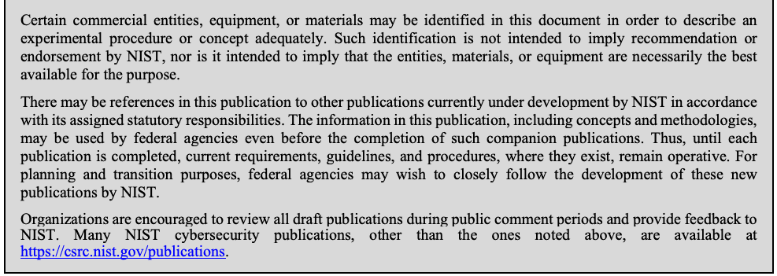
実験の手順や概念を適切に説明するために、本書では特定の商業的な事業体、機器、または資材を挙げている場合があります。そうした記載は、NIST による推奨や支持を意味するものではなく、それらの事業体、資材、または機器が目的に照らして必ずしも最良であることを意味するものでもありません。
There may be references in this publication to other publications currently under development by NIST in accordance with its assigned statutory responsibilities. The information in this publication, including concepts and methodologies, may be used by federal agencies even before the completion of such companion publications. Thus, until each publication is completed, current requirements, guidelines, and procedures, where they exist, remain operative. For planning and transition purposes, federal agencies may wish to closely follow the development of these new publications by NIST.
本刊行物では、NIST が法令により課された責務に従って現在策定中の他の刊行物に言及している場合があります。本刊行物の情報は、概念や方法論を含め、そうした関連刊行物の完成前であっても連邦機関が利用できます。したがって、各刊行物が完成するまでは、現行の要件、ガイドライン、および手順が存在する場合、それらが引き続き有効です。計画および移行のため、連邦機関は、NIST によるこれらの新しい刊行物の策定状況を注意深く追うことを検討すべきです。
Organizations are encouraged to review all draft publications during public comment periods and provide feedback to NIST. Many NIST cybersecurity publications, other than the ones noted above, are available at https://csrc.nist.gov/publications.
組織は、パブリックコメントの期間中にすべてのドラフト刊行物を確認し、NIST にフィードバックを提供することが勧められています。上記以外の NIST のサイバーセキュリティ関連刊行物の多くは https://csrc.nist.gov/publications で入手できます。
Comments on this publication may be submitted to:
本刊行物に対するコメントは次の宛先に提出できます:
National Institute of Standards and Technology Attn: Applied Cybersecurity Division, Information Technology Laboratory 100 Bureau Drive (Mail Stop 2000) Gaithersburg, MD 20899-2000 Email: iotsecurity@nist.gov
National Institute of Standards and Technology Attn: Applied Cybersecurity Division, Information Technology Laboratory 100 Bureau Drive (Mail Stop 2000) Gaithersburg, MD 20899-2000 Email: iotsecurity@nist.gov
All comments are subject to release under the Freedom of Information Act (FOIA).
すべてのコメントは情報自由法（FOIA）に基づく公開の対象です。
Reports on Computer Systems Technology
コンピュータシステム技術に関する報告書
The Information Technology Laboratory (ITL) at the National Institute of Standards and Technology (NIST) promotes the U.S. economy and public welfare by providing technical leadership for the Nation’s measurement and standards infrastructure. ITL develops tests, test methods, reference data, proof of concept implementations, and technical analyses to advance the development and productive use of information technology. ITL’s responsibilities include the development of management, administrative, technical, and physical standards and guidelines for the cost-effective security and privacy of other than national security-related information in federal information systems.
米国国立標準技術研究所（NIST）の情報技術研究所（ITL）は、国の測定・標準のインフラに対する技術的なリーダーシップを提供することにより、米国の経済と公共の福祉を促進しています。ITL は、情報技術の発展と生産的な利用を進めるために、テスト、テスト方法、参照データ、概念実証の実装、および技術分析を開発しています。ITL の責務には、連邦情報システムにおける国家安全保障関連以外の情報について、費用対効果の高いセキュリティとプライバシーのための管理上、行政上、技術上、および物理上の標準とガイドラインの策定が含まれます。
Abstract
概要
This report summarizes the feedback received on the work of the NIST Cybersecurity for IoT program on device cybersecurity at a virtual workshop in July 2020. NISTIR 8259, Foundational Cybersecurity Activities for IoT Device Manufacturers and NISTIR 8259A, IoT Device Cybersecurity Capability Core Baseline provide general guidance on how manufacturers can understand and approach their role in supporting customers’ cybersecurity needs and goals. As discussed in those documents, specific sectors and use cases may require more specific guidance than what is included in NISTIR 8259A’s core baseline for IoT devices. NIST conducted the virtual workshop “Building the Federal Profile for IoT Device Cybersecurity” to discuss and gather community input on the creation of a federal profile of the core baseline for use by federal agencies. This publication provides a summary of the workshop. The baseline will be published in NISTIR 8259D, Profile of the IoT Core Baseline for the Federal Government.
本報告書は、2020年7月に開催されたバーチャルワークショップで、NIST の Cybersecurity for IoT プログラムによるデバイスのサイバーセキュリティに関する取り組みに対して寄せられたフィードバックをまとめたものです。NISTIR 8259, Foundational Cybersecurity Activities for IoT Device Manufacturers と NISTIR 8259A, IoT Device Cybersecurity Capability Core Baseline は、製造者が顧客のサイバーセキュリティ上のニーズと目標を支援する自らの役割をどのように理解し、取り組めばよいかについて、一般的なガイダンスを提供しています。これらの文書で論じられているように、特定の分野やユースケースでは、NISTIR 8259A の IoT デバイス向けコアベースラインに含まれるものよりも具体的なガイダンスが必要になる場合があります。NIST は、連邦機関が使用するためのコアベースラインの連邦プロファイルの作成について議論し、コミュニティから意見を収集するため、バーチャルワークショップ「Building the Federal Profile for IoT Device Cybersecurity」を実施しました。本刊行物は、そのワークショップの概要を示します。このベースラインは、NISTIR 8259D, Profile of the IoT Core Baseline for the Federal Government として公開される予定です。
Keywords
キーワード
cybersecurity baseline; Internet of Things (IoT); securable computing devices; security requirements; Risk Management Framework; federal profile.
サイバーセキュリティベースライン、モノのインターネット（IoT）、セキュリティ保護可能なコンピューティングデバイス、セキュリティ要件、リスクマネジメントフレームワーク、連邦プロファイル。
Acknowledgments
謝辞
The authors wish to thank all contributors to this publication, including the participants in workshops and other interactive sessions; the individuals and organizations from the public and private sectors, including manufacturers from various sectors as well as several manufacturer trade organizations, who provided feedback on the preliminary public content and colleagues at NIST who offered invaluable inputs and feedback.
著者は、本刊行物へのすべての貢献者に感謝します。これには、ワークショップやその他の対話型セッションの参加者、予備的な公開内容にフィードバックを寄せた官民の個人・組織（さまざまな分野の製造者や複数の製造者業界団体を含む）、そして貴重な意見とフィードバックを提供してくれた NIST の同僚が含まれます。
Audience
想定読者
The main audiences for this publication are IoT device manufacturers and federal agencies procuring IoT devices. This publication may also help IoT device customers or integrators, particularly those that work in or with the federal government and those considering how profiling the core baseline will further IoT device cybersecurity for their sector.
本刊行物の主な対象読者は、IoT デバイスの製造者と、IoT デバイスを調達する連邦機関です。本刊行物は、IoT デバイスの顧客やインテグレーターにも役立つ場合があります。特に、連邦政府で働く、または連邦政府と協力する顧客やインテグレーター、およびコアベースラインのプロファイル作成が自らの分野の IoT デバイスのサイバーセキュリティをどのように前進させるかを検討している顧客やインテグレーターに役立つ場合があります。
Table of Contents
目次
List of Appendices
付録の一覧
1 Introduction
1 はじめに
On July 22-23, 2020, the National Institute of Standards and Technology (NIST) conducted a virtual workshop entitled Building the Federal Profile For IoT Device Cybersecurity: Next Steps for Securing Federal Systems. The event included stakeholders from across government, industry, international bodies, and academia. The goal was to identify gaps in the Internet of Things (IoT) cybersecurity ecosystem that need to be addressed in a federal profile for IoT device cybersecurity. Over 500 people participated from the U.S. and 25 other countries, representing a broad mix of government, industry, and academia.
2020年7月22日から23日にかけて、米国国立標準技術研究所（NIST）は、Building the Federal Profile For IoT Device Cybersecurity: Next Steps for Securing Federal Systems と題するバーチャルワークショップを実施しました。このイベントには、政府、産業界、国際機関、学術界のステークホルダーが参加しました。目的は、IoT デバイスのサイバーセキュリティに関する連邦プロファイルで対処すべき、モノのインターネット（IoT）のサイバーセキュリティのエコシステムにおけるギャップを特定することでした。米国と他の 25 か国から 500 人を超える参加者があり、政府、産業界、学術界の幅広い層が集まりました。
1.1 About the NIST Cybersecurity for the Internet of Things Program
1.1 NIST Cybersecurity for the Internet of Things プログラムについて
The mission of the NIST Cybersecurity for the Internet of Things (IoT) program [PRGM] is to cultivate trust in the IoT and foster an environment that enables innovation on a global scale through standards, guidance, and related tools. The Cybersecurity for IoT program supports the development and application of standards, guidelines, and related tools to improve the cybersecurity of connected devices and the environments in which they are deployed. By collaborating with stakeholders across government, industry, international bodies, and academia, the program aims to cultivate trust and foster an environment that enables innovation on a global scale.
NIST Cybersecurity for the Internet of Things（IoT）プログラム [PRGM] の使命は、標準、ガイダンス、関連ツールを通じて、IoT に対する信頼を育み、世界規模のイノベーションを可能にする環境を促進することです。Cybersecurity for IoT プログラムは、接続されたデバイスと、それが展開される環境のサイバーセキュリティを向上させるための標準、ガイドライン、関連ツールの策定と適用を支援しています。このプログラムは、政府、産業界、国際機関、学術界のステークホルダーと協力することにより、信頼を育み、世界規模のイノベーションを可能にする環境を促進することを目指しています。
1.2 Background For The Federal Profile
1.2 連邦プロファイルの背景
NIST leveraged the Core Baseline established in NIST Internal Report (NISTIR) 8259A, IoT Device Cybersecurity Capability Core Baseline [NISTIR8259A], and analyzed the security controls found in NIST Special Publication (SP) 800-53, Security and Privacy Controls for Federal Information Systems and Organizations [SP800-53], to develop a catalog of key IoT device cybersecurity capabilities and non-technical supporting capabilities and associated IoT device customer controls. As was discussed in NISTIR 8228, Considerations for Managing Internet of Things (IoT) Cybersecurity and Privacy Risks [NISTIR8228], IoT devices routinely lack critical cybersecurity capabilities that are commonly found in IT devices. Additionally, IoT manufacturers often do not provide sufficient information for IoT device customers to integrate their devices in secure ways in order to mitigate the risks created within the associated systems and to comply with compliance requirements. The catalog under development is a critical building block for establishing a federal profile of the Core Baseline (“federal profile”) to help federal agencies and manufacturers bridge these gaps. Identifying critically needed capabilities will help federal agencies acquire IoT devices that they can securely incorporate into their systems and meet security requirements for federal information and systems. The future federal profile also aims to help manufacturers looking at federal customers and use cases to go beyond identifying the types of cybersecurity device capabilities listed in NISTIR 8259A to considering specific capabilities requirements of federal agencies. Manufacturers can engineer the technical capabilities and provide non-technical supporting capabilities to IoT device customers to help ensure that customers’ systems meet an established level of management, operational, and technical security control requirements.
NIST は、NIST Internal Report（NISTIR）8259A, IoT Device Cybersecurity Capability Core Baseline [NISTIR8259A] で確立されたコアベースラインを活用し、NIST Special Publication（SP）800-53, Security and Privacy Controls for Federal Information Systems and Organizations [SP800-53] にあるセキュリティ管理策を分析して、IoT デバイスの主要なサイバーセキュリティ能力、非技術的な支援能力、および関連する IoT デバイス顧客向け管理策のカタログを作成しました。NISTIR 8228, Considerations for Managing Internet of Things (IoT) Cybersecurity and Privacy Risks [NISTIR8228] で論じられたように、IoT デバイスには、IT デバイスで一般的に見られる重要なサイバーセキュリティ能力が欠けていることがよくあります。さらに、IoT 製造者は、IoT デバイスの顧客が関連システム内に生じるリスクを軽減し、コンプライアンス要件を満たすために、デバイスを安全に統合するための十分な情報を提供しないことがよくあります。策定中のこのカタログは、連邦機関と製造者がこれらのギャップを埋める助けとなる、コアベースラインの連邦プロファイル（「連邦プロファイル」）を確立するための重要な構成要素です。特に必要とされる能力を特定することで、連邦機関は、自らのシステムに安全に組み込むことができ、連邦の情報およびシステムに関するセキュリティ要件を満たす IoT デバイスを取得しやすくなります。将来の連邦プロファイルは、連邦の顧客やユースケースに関心を持つ製造者が、NISTIR 8259A に挙げられたデバイスのサイバーセキュリティ能力の種類を特定するだけでなく、連邦機関に固有の能力要件を検討する助けとなることも目指しています。製造者は、技術的能力を設計し、非技術的な支援能力を IoT デバイスの顧客に提供することで、顧客のシステムが、確立された水準の管理面、運用面、技術面のセキュリティ管理策要件を満たすことを確実にする助けとなれます。
1.3 About the IoT Federal Profile Virtual Workshop
1.3 IoT 連邦プロファイルのバーチャルワークショップについて
The free, publicly available virtual workshop consisted of a pair of two-hour long sessions, one per day1. The agenda is provided in Table 1. It included panel discussions on key topics related to cybersecurity challenges for federal IoT devices. These topics include the need for support for IoT device cybersecurity capabilities and additional supporting capabilities from the manufacturers and mechanisms giving federal agencies, as well as non-federal users of IoT devices, confidence that such devices will satisfy defined cybersecurity requirements.
無料で一般に公開されたこのバーチャルワークショップは、2時間のセッションを2回、各日1回ずつ実施する構成でした1。議題は表 1 に示します。連邦 IoT デバイスのサイバーセキュリティ上の課題に関する主要なトピックについて、パネルディスカッションが行われました。これらのトピックには、製造者による IoT デバイスのサイバーセキュリティ能力と追加の支援能力のサポートの必要性、および連邦機関と IoT デバイスの非連邦ユーザーに、そのようなデバイスが定められたサイバーセキュリティ要件を満たすという確信を与える仕組みが含まれます。
Table 1 – Agenda for the IoT Federal Profile Virtual Workshop
表 1 – IoT 連邦プロファイルのバーチャルワークショップの議題
| Day | Time | Activity and Presenters |
|---|---|---|
| 22 July | 10:00 am | Welcome and introduction: Kevin Stine, Chief, Applied Cybersecurity Division, NIST |
| 10:15 am | Keynote: Grant Schneider, Senior Director for Cybersecurity Policy at National Security Council, The White House and Federal Chief Information Security Officer | |
| 10:45 am | Panel Discussion: Stoves, Drones, and Automobiles!: Federal Government IoT Use-Cases and Technical Cybersecurity Considerations (1 hour, 15 minutes)
| |
| 23 July | 10:00 am | Panel Discussion: Who are you going to call?: Federal Government IoT Non-Technical Cybersecurity Needs
|
| 23 July | 10:55 | Panel Discussion: Close Encounters of the Confidence Mechanism Kind
|
| 23 July | 11:55 AM | Concluding Remarks: Kat Megas, Program Manager, NIST Cybersecurity for IoT Program |
| 日 | 時刻 | 内容と発表者 |
|---|---|---|
| 7月22日 | 10:00 am | 歓迎と紹介: Kevin Stine, Chief, Applied Cybersecurity Division, NIST |
| 10:15 am | 基調講演: Grant Schneider, Senior Director for Cybersecurity Policy at National Security Council, The White House and Federal Chief Information Security Officer | |
| 10:45 am | パネルディスカッション: Stoves, Drones, and Automobiles!: Federal Government IoT Use-Cases and Technical Cybersecurity Considerations（1 時間 15 分）
| |
| 7月23日 | 10:00 am | パネルディスカッション: Who are you going to call?: Federal Government IoT Non-Technical Cybersecurity Needs
|
| 7月23日 | 10:55 | パネルディスカッション: Close Encounters of the Confidence Mechanism Kind
|
| 7月23日 | 11:55 AM | 閉会の挨拶: Kat Megas, Program Manager, NIST Cybersecurity for IoT Program |
NIST sought attendance from those involved in federal IoT cybersecurity, the manufacturers of IoT devices, researchers in related fields and other stakeholders. NIST encouraged participants to become familiar with the key IoT device cybersecurity capabilities and supporting non-technical manufacturer capabilities and associated IoT device customer controls previously developed by NIST and available for review and feedback via GitHub2.
NIST は、連邦の IoT サイバーセキュリティに関わる人々、IoT デバイスの製造者、関連分野の研究者、その他のステークホルダーの参加を募りました。NIST は参加者に対し、NIST がそれ以前に作成し、GitHub2 でレビューとフィードバックのために公開している、IoT デバイスの主要なサイバーセキュリティ能力、製造者の非技術的な支援能力、および関連する IoT デバイスの顧客向けの管理策に慣れておくよう促しました。
The workshop drew approximately 500 participants, panelists, speakers, and moderators. This included representatives from:
ワークショップには、参加者、パネリスト、講演者、司会者を合わせて約 500 人が集まりました。内訳には次の代表者が含まれます。
•A mixture of government, industry, and academia, as well as researchers and the press
•政府、産業界、学術界の人々に加え、研究者と報道関係者
•A broad range of federal government organizations including civil government, defense, and intelligence
•文民の政府機関、防衛、情報機関を含む、幅広い連邦政府組織
•26 countries, including 5 foreign governments
•26 か国（外国政府 5 か国を含む）
•At least 39 U.S. states, including 8 state governments
•少なくとも米国の 39 州（州政府 8 州を含む）
In addition to the ability for participants to submit individual questions (which could be “up-voted” by other participants), the workshop included a series of 12 polls as a mechanism to gather participant feedback and influence the focus of panel discussions. The poll questions and poll results are presented in Appendix A. Since workshop attendees created a by-definition self-selected survey group and poll responses were entirely voluntary, poll results should not be viewed as providing statistically-valid sample size results for their questions.
参加者が個別に質問を投稿でき（ほかの参加者が「賛成票」を投じられる）機能に加え、参加者のフィードバックを集め、パネルディスカッションの焦点に影響を与える仕組みとして、ワークショップでは 12 回のアンケートを実施しました。アンケートの質問と結果は付録 A に示します。ワークショップの出席者は、定義上、自己選択で構成された調査集団であり、アンケートへの回答は完全に任意であったため、アンケート結果を各質問について統計的に妥当な標本サイズに基づく結果と見なすべきではありません。
Videos of each workshop segment are available on the event web page. Based on the participant presentations and feedback collected from stakeholders, this report provides a summary of key points and a general discussion of possible follow-on activities for the program.
ワークショップの各セグメントの動画は、イベントのウェブページで視聴できます。本報告書は、参加者の発表とステークホルダーから集めたフィードバックに基づき、主要な論点の概要と、プログラムの今後の活動の可能性に関する一般的な議論を示します。
2 Event Summary and Key Takeaways
2 イベントの概要と主な要点
The summary below highlights significant points from the keynote presentation, and identifies discussion topics, and NIST’s takeaways and observations from the three panel sessions.
以下の概要では、基調講演の重要な論点を取り上げるとともに、3 つのパネルセッションでの議論のトピックと、NIST の要点および所見を示します。
2.1 Keynote: Federal Chief Information Security Officer
2.1 基調講演: 連邦最高情報セキュリティ責任者
The keynote presentation was made by Grant Schneider, the Federal Chief Information Security Officer (CISO), setting the stage for the panel discussions that followed. Mr. Schneider also participated in a question and answer session at the conclusion of his keynote. Mr. Schneider’s presentation and responses to questions highlighted a number of important considerations for the use of IoT technology in federal information systems:
基調講演は連邦最高情報セキュリティ責任者（CISO）の Grant Schneider 氏が行い、その後のパネルディスカッションの前提を示しました。Schneider 氏は、基調講演の終了時の質疑応答にも参加しました。同氏の講演と質問への回答では、連邦情報システムでの IoT 技術の利用に関する多くの重要な考慮事項が強調されました。
•In his opinion, IoT security has not received enough attention, in both consumer and organizational contexts. He noted that the increasing interconnection of systems of all types increases attack surfaces and expands the threat profile.
•同氏の意見では、IoT のセキュリティは、消費者と組織のいずれの文脈でも十分な注意を受けてきませんでした。あらゆる種類のシステムの相互接続が進むことで、攻撃対象領域が増え、脅威の様相が広がっていると指摘しました。
•He identified three core activities that the Office of Management and Budget (OMB) performs that are particularly relevant to federal information system security:
•同氏は、行政管理予算局（OMB）が行っている、連邦情報システムのセキュリティと特に関連が深い 3 つの中核的な活動を挙げました。
•Overseeing the implementation of Federal Information Security Management Act (FISMA) for non-National Security Systems; he noted that in doing this OMB works closely with the Department of Defense (DoD) and the Director of National Intelligence (DNI) to present consistent guidance across the federal space including the DoD and the intelligence community (IC).
•国家安全保障システム以外のシステムについて、Federal Information Security Management Act（FISMA）の実施を監督すること。同氏は、これを行う際に OMB が国防総省（DoD）および国家情報長官（DNI）と緊密に協力し、DoD と情報コミュニティ（IC）を含む連邦全体で一貫したガイダンスを示していると述べました。
•Overseeing the implementation of cybersecurity policies and standards. He noted that OMB has been taking a more active oversight role and seeking to assist federal organizations in meeting their FISMA responsibilities.
•サイバーセキュリティのポリシーと標準の実施を監督すること。同氏は、OMB がより積極的な監督の役割を担い、連邦組織が FISMA の責任を果たすことを支援しようとしていると述べました。
•Ensuring agencies comply with government-wide cybersecurity guidance and legislation, including Binding Operational Directives and Emergency Directives from the Department of Homeland Security’s (DHS) Cybersecurity and Infrastructure Security Agency (CISA).
•国土安全保障省（DHS）のサイバーセキュリティ・インフラストラクチャセキュリティ庁（CISA）による Binding Operational Directives と Emergency Directives を含む、政府全体のサイバーセキュリティのガイダンスと法令を各機関が遵守していることを確保すること。
•He stated that the scope of “Federal Information systems includes IoT devices”, adding “I don't think we've had enough conversation on that.” He expressed concern that IoT devices are seen as less impactful or less risky, and cited an example of a networked traffic sign being used as an entry point for a cyber-attack as a “wake-up call” to the range of concerns that IoT raises.
•同氏は、「連邦情報システムには IoT デバイスが含まれる」と述べ、「その点について十分な議論がなされてきたとは思わない」と付け加えました。IoT デバイスが影響や危険性の小さいものと見られていることへの懸念を示し、ネットワークにつながった交通標識がサイバー攻撃の侵入口として使われた例を、IoT が引き起こす一連の懸念への「警鐘」として挙げました。
•He emphasized that OMB’s work in cybersecurity is guided by a risk management philosophy. He described a “high-value asset” program intended to assist agencies in identifying and protecting their high-value information system and data, and share solutions across agencies.
•同氏は、OMB のサイバーセキュリティに関する取り組みがリスクマネジメントの考え方に導かれていることを強調しました。各機関が自らの重要性の高い情報システムとデータを特定して保護し、機関間で解決策を共有することを支援する「高価値資産」プログラムについて説明しました。
•He said the Federal government is seeking to lead by example, as captured in the National Cyber Strategy published in September 2018 [CYBSTRAT]. Concerns he identified included the difficulty of determining the security provided by IoT products, and the limitations of government buying power to “move the economy”, meaning that other incentives such as government mandates or regulation might need to be considered.
•同氏は、2018年9月に公表された National Cyber Strategy [CYBSTRAT] に示されているとおり、連邦政府が模範を示して主導しようとしていると述べました。同氏が挙げた懸念には、IoT 製品が提供するセキュリティを判断することの難しさや、「経済を動かす」という点での政府の購買力の限界があり、政府による義務づけや規制といったほかのインセンティブを検討する必要があるかもしれないということでした。
•He indicated that IoT devices were a component of broader concerns about supply chain security and risk management, which is a major focus of both the executive and legislative branches of government. Poorly designed and configured devices are a notable part of that supply chain concern.
•同氏は、IoT デバイスは、サプライチェーンのセキュリティとリスクマネジメントに関する、より広い懸念の一要素であり、これは政府の行政府と立法府の双方にとって主要な焦点であると述べました。設計や構成が不十分なデバイスは、そのサプライチェーンに関する懸念の顕著な部分を占めます。
•He described the creation of the Federal Acquisition Security Council (FASC) by the Secure Technologies Act of 2018 [SECTECH], and identified several FASC focus areas:
•同氏は、Secure Technologies Act of 2018 [SECTECH] による Federal Acquisition Security Council（FASC）の創設について説明し、FASC の重点分野をいくつか挙げました。
•The creation of an information sharing environment for supply chain risk management information.
•サプライチェーンリスクマネジメント情報のための情報共有環境の創設。
•The potential establishment of shared services for supply chain risk management, to allow federal organizations of all sizes to perform due diligence regarding supply chain risk.
•あらゆる規模の連邦組織がサプライチェーンリスクに関するデューデリジェンスを実施できるようにする、サプライチェーンリスクマネジメントのための共有サービスの設立の可能性。
•Recommending removal orders or exclusion orders to DHS, DoD, and the IC to ban covered items, and encouraging individual agencies to develop their own such orders where appropriate.
•対象品目を禁止するため、DHS、DoD、IC に排除命令または除外命令を勧告すること、および必要に応じて各機関が独自にそのような命令を作成するよう促すこと。
•He clarified that IoT devices that connect via cloud or mobile (e.g., 5G) technologies are part of federal information systems even if they don’t directly touch a federal network, saying that current policies cover IoT and similar devices in the definition of a federal information system, although he recognized there may be need for amplifying guidance.
•同氏は、クラウドやモバイル（たとえば 5G）の技術を介して接続する IoT デバイスは、連邦ネットワークに直接触れなくても連邦情報システムの一部であると明確にし、現行のポリシーは連邦情報システムの定義に IoT および類似のデバイスを含めていると述べました。ただし、補足的なガイダンスが必要になる可能性があることは認めました。
•He stated that he saw value in third-party certifications for IoT cybersecurity, although he noted that it could be unclear what is actually being certified, and suggested that it may be more meaningful to certify the manufacturer’s development methodology rather than specific IoT products.
•同氏は、IoT のサイバーセキュリティに対する第三者認証に価値があると考えていると述べました。ただし、実際に何が認証されるのかが不明確になりうると指摘し、特定の IoT 製品ではなく、製造者の開発方法論を認証するほうが意味があるかもしれないと示唆しました。
•He discussed the value of an international trusted marketplace for IoT, and the importance of international standards and working with international partners to achieve that.
•同氏は、IoT のための国際的な信頼できる市場の価値と、それを実現するための国際標準および国際的なパートナーとの協力の重要性について論じました。
2.2 Summary and Takeaways from Panel Sessions
2.2 パネルセッションの概要と要点
These takeaways are ideas that NIST heard from participants and that received significant support from attendees and/or panelists. This workshop was not a forum for developing consensus, so these takeaways represent themes repeatedly heard not a formal position of attendees or participants. While this document seeks to be thorough in reflecting the workshop discussions, a summary document cannot capture all the thoughts, opinions, and suggestions provided during the sessions. The topics, takeaways, and observations in this report do not represent specific NIST recommendations or guidance, but are intended to capture and summarize discussions from the workshop and viewpoints expressed by panelists and participants. These takeaways provide important feedback to the program and a basis for future conversations with the community.
これらの要点は、NIST が参加者から聞いた考えであり、出席者やパネリスト、またはその双方から大きな支持を得たものです。このワークショップは合意形成の場ではなかったため、これらの要点は繰り返し聞かれたテーマを表すものであり、出席者や参加者の正式な立場ではありません。本書はワークショップの議論を網羅的に反映することを目指していますが、概要の文書では、セッション中に出されたすべての考え、意見、提案を捉えることはできません。本報告書のトピック、要点、所見は、NIST の具体的な推奨事項やガイダンスを表すものではなく、ワークショップでの議論と、パネリストや参加者が表明した見解を捉えて要約することを意図しています。これらの要点は、プログラムへの重要なフィードバックとなり、コミュニティとの今後の対話の基礎となります。
Takeaway 1: IoT is both extremely diverse and becoming pervasive in federal information systems and beyond. This will only grow over time as network-connected products of all types become the norm in the market.
原本PDFの抜粋画像
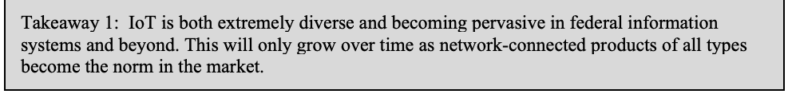
要点 1: IoT は極めて多様であると同時に、連邦情報システム内外で広く普及しつつあります。あらゆる種類のネットワーク接続製品が市場で当たり前になるにつれ、この傾向は今後も拡大するだけです。
Numerous panelists noted that consumers are widely adopting IoT devices and that IoT use within federal agencies is growing rapidly. The General Services Administration (GSA) has identified over 75 makes and 210 distinct models of IoT devices deployed in facilities they manage, spanning a broad range of IoT related services. IoT devices support many kinds of services that include network-connected surveillance equipment, irrigation control systems, physical access control systems, lighting control systems, and various types of environmental measuring systems, among others.
多くのパネリストが、消費者が IoT デバイスを広く採用しており、連邦機関内での IoT の利用が急速に拡大していると指摘しました。General Services Administration（GSA）は、自らが管理する施設に展開されている IoT デバイスについて、75 を超えるメーカーと 210 の異なるモデルを特定しており、IoT 関連サービスの幅広い範囲に及んでいます。IoT デバイスは、ネットワーク接続された監視機器、灌漑制御システム、物理アクセス制御システム、照明制御システム、各種の環境測定システムなど、多くの種類のサービスを支えています。
Manufacturers have entered the IoT market with enthusiasm leading to a great deal of innovation and a diversity of product offerings. However, this market is still quite immature and dynamic where price and features have dominated manufacturer priorities and cybersecurity has not been given adequate attention. Many small- and medium-size manufacturers moving into the IoT market do not have the cybersecurity background of more established information technology (IT) product manufacturers. Many of the lessons learned in the world of security for IT have not yet been applied to IoT devices, or haven’t been adapted to those devices’ unique characteristics, such as limited power and computing capabilities. The market is also quite diverse, with some vertical sectors (e.g., medical devices) having more clearly defined requirements than others (e.g., consumer-oriented IoT).
製造者は熱意をもって IoT 市場に参入しており、大きなイノベーションと多様な製品の提供につながっています。しかし、この市場はまだ非常に未成熟で流動的であり、価格と機能が製造者の優先事項を占め、サイバーセキュリティには十分な注意が払われていません。IoT 市場に参入する多くの中小規模の製造者は、より確立した情報技術（IT）製品の製造者ほどのサイバーセキュリティの素養を持っていません。IT のセキュリティの世界で得られた教訓の多くは、まだ IoT デバイスに適用されていないか、電力や計算能力が限られているといったこれらのデバイス固有の特性に合わせて調整されていません。この市場は非常に多様でもあり、一部の垂直分野（たとえば医療機器）は、他の分野（たとえば消費者向け IoT）よりも要件が明確に定義されています。
Use of IoT is expected to grow widely. The addition of network connectivity to products of varying types is a near-universal theme. Manufacturers are incorporating this feature into nearly every new product, creating a situation where the introduction of network-connected IoT devices into an environment is nearly unavoidable. Katherine Gronberg of Fourscout noted it is “going to be increasingly hard for agencies to have appliances … that don't have a network connection.”
IoT の利用は広く拡大すると見込まれます。さまざまな種類の製品にネットワーク接続を追加することは、ほぼ普遍的なテーマです。製造者はこの機能をほぼすべての新製品に組み込んでおり、環境にネットワーク接続された IoT デバイスが持ち込まれる事態はほとんど避けられなくなっています。Forescout の Katherine Gronberg 氏は、「機関にとって、ネットワーク接続のない機器…を持つことはますます難しくなる」と指摘しました。
Takeaway 2: The NIST IoT cybersecurity project's characterization of IoT has found general acceptance in the cybersecurity community as a working definition.
原本PDFの抜粋画像
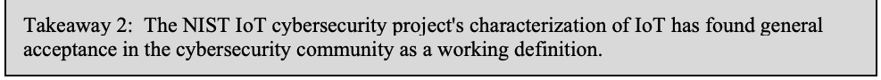
要点 2: NIST の IoT サイバーセキュリティプロジェクトによる IoT の特徴づけは、作業上の定義としてサイバーセキュリティコミュニティで広く受け入れられています。
While IoT devices are becoming nearly ubiquitous in many environments, defining and categorizing such devices remains an on-going challenge.3 IoT covers a broad spectrum, from building monitoring systems to connected automobiles to smart appliances and even toys. This lack of consensus was discussed at the October 2017 NIST IoT Cybersecurity Colloquium. Since that event, the NIST IoT Cybersecurity program published a description of IoT device capabilities in NISTIR 8228, and created a working definition of IoT devices as the scope for NISTIR 8259. Panelists in the July 2020 workshop, including representatives from two vendor participants, described the NISTIR 8259 characterization of IoT devices as having “at least one transducer (sensor or actuator) for interacting directly with the physical world and at least one network interface … for interfacing with the digital world” as “more or less becom[ing] a de facto definition … [that] will probably be used by regulatory bodies in the U.S. and the federal government and abroad moving forward.”4
IoT デバイスは多くの環境でほぼ遍在するようになっていますが、そのようなデバイスの定義と分類は依然として継続的な課題です。3 IoT は、建物の監視システムからコネクテッドカー、スマート家電、さらには玩具に至るまで、幅広い範囲に及びます。この合意の欠如は、2017年10月の NIST IoT Cybersecurity Colloquium で議論されました。そのイベント以降、NIST IoT Cybersecurity プログラムは、NISTIR 8228 で IoT デバイスの能力の記述を公表し、NISTIR 8259 の対象範囲として IoT デバイスの作業上の定義を作成しました。2020年7月のワークショップのパネリスト（ベンダー 2 社の代表を含む）は、「物理世界と直接やり取りするトランスデューサー（センサーまたはアクチュエーター）を少なくとも 1 つ、デジタル世界とのインタフェースとなるネットワークインタフェースを少なくとも 1 つ」持つものとする NISTIR 8259 の IoT デバイスの特徴づけについて、「多かれ少なかれ事実上の定義になりつつあり、今後、米国の規制当局や連邦政府、そして海外でも使われる可能性が高い」と述べました。4
Takeaway 3: IoT customers, especially in the consumer space, tend not to prioritize IoT device security and are often unaware that it should be a consideration in their selection and use of IoT devices.
原本PDFの抜粋画像
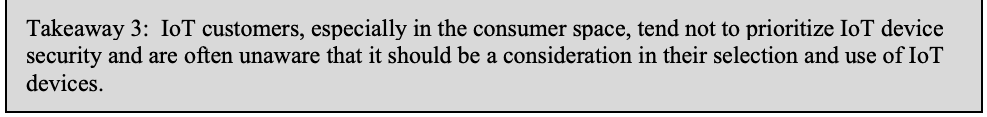
要点 3: IoT の顧客、特に消費者分野の顧客は、IoT デバイスのセキュリティを優先しない傾向があり、IoT デバイスを選択し使用する際にそれを考慮すべきであることに気づいていないことが多くあります。
Overwhelmingly, workshop participants agreed that customers lack an awareness that cybersecurity capabilities can vary among devices when they make purchasing decisions about IoT. This appears to be true regardless of whether the customers are individual consumers or those responsible for procurement in organizational environments. In the consumer space the buyer’s assumption generally is that if a product is on the market, its safety and security can be assumed. A UK study found that consumers focus on IoT device features and costs as the most important discriminators, with cybersecurity either not on the list of customer priorities or at best lagging far behind as a decision criterion. Mike Bergman of the Consumer Technology Association (CTA) stated that “we have been doing this research for years and years and the answers never changed. Cybersecurity is not on this list. So while it might be a good idea to try to get it on the list … it is going to be a very long and expensive education process.”
ワークショップの参加者は圧倒的に、顧客が IoT の購入を決定する際に、サイバーセキュリティ能力がデバイスによって異なりうることを認識していないという点で一致しました。これは、顧客が個人の消費者であるか、組織環境で調達を担当する者であるかを問わず当てはまるようです。消費者分野では、購入者は一般に、製品が市場に出ているならその安全性とセキュリティは前提としてよいと考えています。英国の調査では、消費者は IoT デバイスの機能とコストを最も重要な判断材料として重視しており、サイバーセキュリティは顧客の優先事項の一覧に入っていないか、入っていても判断基準としては大きく後れをとっていることがわかりました。Consumer Technology Association（CTA）の Mike Bergman 氏は、「私たちは何年も何年もこの調査を行ってきましたが、答えは変わりません。サイバーセキュリティはこの一覧に入っていません。ですから、それを一覧に入れようとするのはよい考えかもしれませんが、…非常に長く費用のかかる教育のプロセスになるでしょう」と述べました。
Where meaningful cybersecurity information about a product is available, a further challenge is educating customers about how to understand the information available and interpret its implications when using the product in their environments. In organizational procurement environments, the staff responsible for procurement contracts typically lack subject matter expertise regarding cybersecurity and need education and training in leveraging contractual language to mandate security for procurements. Peter Stephens said “whenever I speak to procurement organizations, whether they are retailers or housing, manufacturing, builders or other organizations who use smart devices in some format, the person responsible for procuring the devices quite often is not an expert at all.” The availability of sample procurement language can be of great benefit in improving the security of products procured by organizations.
製品に関する有意義なサイバーセキュリティ情報が入手できる場合でも、入手可能な情報をどう理解し、自らの環境で製品を使用する際の意味合いをどう解釈するかを顧客に教育することが、さらなる課題となります。組織の調達環境では、調達契約を担当する職員は通常、サイバーセキュリティに関する専門知識を欠いており、調達にセキュリティを義務づけるために契約文言を活用する方法についての教育とトレーニングを必要としています。Peter Stephens 氏は、「小売業者であれ、住宅、製造、建設業者であれ、何らかの形でスマートデバイスを使用するその他の組織であれ、調達組織と話すときはいつも、デバイスの調達を担当する人が専門家でないことが非常に多い」と述べました。調達文言のサンプルが利用できれば、組織が調達する製品のセキュリティを向上させるうえで大きな利点となりえます。
Takeaway 4: The community recognizes a need for an “international trusted marketplace” for IoT, but market forces alone are unlikely to provide sufficient incentive to bring that into being.
原本PDFの抜粋画像
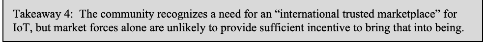
要点 4: コミュニティは IoT のための「国際的な信頼できる市場」の必要性を認識していますが、市場原理だけでは、それを実現するための十分なインセンティブは得られそうにありません。
Most workshop participants agreed that manufacturers of IoT devices currently lack market incentives to prioritize cybersecurity as a concern when designing, marketing, and supporting their products. Some counterexamples were presented in which informed customers do recognize the advantages of enhanced security. This suggests that enhanced cybersecurity could demonstrably be a market advantage if it is emphasized. Workshop poll results showed strong support (71 %) for government mandates as a mechanism for enhancing IoT cybersecurity (poll #4), and general agreement (55 %) that developers of IoT devices currently lack appropriate incentives to secure their products (poll #2). Participants supported a mixture of regulatory guidance, customer education, supply chain pressures, and other considerations to create the economic incentives to shift the overall IoT device market toward enhanced cybersecurity.
ワークショップの参加者の大半は、IoT デバイスの製造者には現在、製品の設計、販売、サポートの際にサイバーセキュリティを懸念事項として優先する市場のインセンティブが欠けているという点で一致しました。情報を得た顧客が、強化されたセキュリティの利点を認識している反例もいくつか示されました。これは、サイバーセキュリティの強化が、強調すれば市場上の優位性になりうる可能性を示唆しています。ワークショップの投票結果では、IoT のサイバーセキュリティを強化する仕組みとして政府による義務づけに強い支持（71 %）があり（投票 #4）、IoT デバイスの開発者には現在、自社製品を保護する適切なインセンティブがないという点で概ね一致（55 %）しました（投票 #2）。参加者は、IoT デバイス市場全体をサイバーセキュリティの強化に向かわせる経済的インセンティブを生み出すため、規制上のガイダンス、顧客の教育、サプライチェーンからの圧力、その他の考慮事項を組み合わせることを支持しました。
A lack of customer understanding today often translates into a lack of demand for needed device cybersecurity capabilities, leading to manufacturers prioritizing other aspects when defining their markets and developing products. The lack of incentives to address cybersecurity is a significant problem in the current IoT ecosystem. This lack is particularly problematic with new developers of IoT devices, who are focused on features and fail to recognize their responsibilities for cybersecurity, and with smaller developers who lack the resources, and often the awareness of the need for cybersecurity, to engineer cybersecurity capabilities within their IoT devices. The introduction of third-party certification or labeling authorities into the ecosystem could also provide incentives for IoT device developers and help level the playing field by encouraging all developers to address cybersecurity requirements.
現在の顧客の理解不足は、必要なデバイスのサイバーセキュリティ能力への需要の不足につながることが多く、製造者は市場を定め製品を開発する際に他の側面を優先することになります。サイバーセキュリティに取り組むインセンティブの欠如は、現在の IoT エコシステムにおける重大な問題です。この欠如は、機能に集中してサイバーセキュリティに対する自らの責任を認識しない IoT デバイスの新規開発者や、IoT デバイスにサイバーセキュリティ能力を組み込む資源を持たず、サイバーセキュリティの必要性への認識も乏しいことの多い小規模な開発者にとって、特に問題となります。エコシステムに第三者認証や表示の機関を導入することも、IoT デバイスの開発者にインセンティブを与え、すべての開発者にサイバーセキュリティ要件への対応を促すことで、競争条件の平準化に役立つ可能性があります。
The requirement for government purchasers to meet mandatory security requirements provides some degree of incentive but the government market, including both civil government and DoD, is neither large enough nor diverse enough to have sufficient leverage to truly drive the broader IoT market. Panel members also mentioned a variety of proposals for incentives to improve IoT device cybersecurity: legislative solutions, third-party certifications, and non-profit labeling authorities. All of these approaches were recognized as ways to encourage manufacturer attention to cybersecurity. A primary objective for all of these incentives is to encourage the development of a trusted, international marketplace for IoT devices where the customers can confidently procure IoT devices and manufacturers recognize that cybersecurity as a feature has meaningful market value.
政府の購入者に必須のセキュリティ要件を満たすことが求められることは、ある程度のインセンティブになりますが、文民の政府機関と DoD の両方を含む政府市場は、より広い IoT 市場を真に動かす十分な影響力を持つほど大きくも多様でもありません。パネリストはまた、IoT デバイスのサイバーセキュリティを向上させるインセンティブについて、立法による解決策、第三者認証、非営利の表示機関といったさまざまな案に言及しました。これらのアプローチはいずれも、製造者のサイバーセキュリティへの注意を促す方法として認識されました。これらすべてのインセンティブの主要な目的は、顧客が安心して IoT デバイスを調達でき、製造者がサイバーセキュリティという機能に意味のある市場価値があることを認識する、信頼できる国際的な IoT デバイス市場の発展を促すことです。
Takeaway 5: Governments are moving ahead with providing guidance, and consensus is building around international standards.
原本PDFの抜粋画像
要点 5: 各国政府はガイダンスの提供を進めており、国際標準をめぐる合意が形成されつつあります。
Workshop participants were broadly supportive of the development and application of formal guidance as a mechanism to improve the cybersecurity of IoT devices. This guidance is developing in the form of international standards, national and state government legislation and regulations, and other mechanisms. Several examples of such guidance were discussed. The NIST IoT cybersecurity program in the U.S. is developing guidance that can be applied by federal agencies, as well as other sectors that choose to adopt them. Individual U.S. states have begun developing IoT security regulations, mandating specific security features in state laws. The United Kingdom is legislating IoT cybersecurity requirements.
ワークショップの参加者は、IoT デバイスのサイバーセキュリティを向上させる仕組みとして、正式なガイダンスの策定と適用を広く支持しました。このガイダンスは、国際標準、国および州政府の法律と規制、その他の仕組みという形で整備が進んでいます。そのようなガイダンスの例がいくつか議論されました。米国の NIST IoT サイバーセキュリティプログラムは、連邦機関のほか、ガイダンスの採用を選択した他の分野でも適用できるガイダンスを策定しています。米国の個々の州は、州法で特定のセキュリティ機能を義務づける IoT セキュリティ規制の策定を始めています。英国は、IoT のサイバーセキュリティ要件を立法化しています。
In addition to governmental cybersecurity standardization and regulation efforts within the U.S. at the national and state level, international standards bodies are working to establish IoT cybersecurity guidance, such as the development of International Organization for Standardization / International Electrotechnical Commission (ISO/IEC) 27402, Cybersecurity — IoT security and privacy — Device baseline requirements. The development of consensus international standards could provide a baseline of cybersecurity guidance for manufacturers and assist in the development of a trusted international marketplace.
米国内の国および州レベルでの政府によるサイバーセキュリティの標準化と規制の取り組みに加え、国際標準化機関も、International Organization for Standardization / International Electrotechnical Commission（ISO/IEC）27402, Cybersecurity — IoT security and privacy — Device baseline requirements の策定など、IoT のサイバーセキュリティに関するガイダンスの確立に取り組んでいます。合意に基づく国際標準の策定は、製造者にサイバーセキュリティガイダンスのベースラインを提供し、信頼できる国際市場の発展を助ける可能性があります。
Takeaway 6: Manufacturers are concerned that fragmented guidance from multiple sources could force corresponding fragmentation of product offerings.
原本PDFの抜粋画像
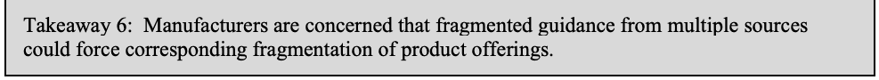
要点 6: 製造者は、複数の情報源からの断片化したガイダンスによって、製品の提供も断片化せざるをえなくなるのではないかと懸念しています。
Manufacturing representatives expressed concern about the potential with the proliferation of guidance from multiple sources for creating conflicting requirements, creating the potential that manufacturers will be forced to respond to fragmented and incompatible or contradictory guidance from different jurisdictions. In that situation manufacturers are faced with the challenge of deciding which markets to address and which regulations apply within those markets. Manufacturers want regulatory consistency and are challenged if conflicting requirements from diverse sources necessitate costly measures (e.g., multiple manufacturing lines) in order to deliver products that address the relevant guidance. Trevor Rudolph said “from the manufacturer’s standpoint really what we want is regulatory certainty and guidance from the federal government.” The ability to focus resources on improving cybersecurity overall by creating fewer products suitable for a broader set of markets is diminished if fragmented regulatory guidance enforces a need to provide different versions of products that each satisfy a different guidance regime. Gordan Gillerman stated “In my experience, manufacturers are adept at building products that meet supersets of requirements and having them be globally able. What is challenging for manufacturers is when all of a sudden [they] need two production lines for the same product because somebody has exclusive requirements from what everyone else agreed on.” Specific security measures that do not adapt to the evolving technology of IoT devices create additional potential for market fragmentation.
製造側の代表者は、複数の情報源からのガイダンスが急増することで、相反する要件が生じ、製造者が、異なる管轄区域からの断片化した、互換性のない、または矛盾するガイダンスへの対応を迫られる可能性があることへの懸念を表明しました。そのような状況では、製造者は、どの市場に対応するか、それぞれの市場でどの規制が適用されるかを決めるという課題に直面します。製造者は規制の一貫性を求めており、多様な情報源からの相反する要件のために、関連するガイダンスに対応した製品を提供するのに費用のかかる措置（たとえば複数の製造ライン）が必要になれば、困難に直面します。Trevor Rudolph 氏は、「製造者の立場から本当に望むのは、規制の確実性と連邦政府からのガイダンスです」と述べました。断片化した規制上のガイダンスにより、それぞれ異なるガイダンスの体系を満たす異なるバージョンの製品を提供する必要が生じると、より広い市場に適した少数の製品を作ることによって、サイバーセキュリティ全体の向上に資源を集中する能力が損なわれます。Gordan Gillerman 氏は、「私の経験では、製造者は要件の上位集合を満たし、世界中で使える製品を作ることに長けています。製造者にとって困難なのは、他のみんなが合意した内容と相容れない要件を誰かが持っているために、突然、同じ製品に 2 本の生産ラインが必要になる場合です」と述べました。IoT デバイスの進化する技術に適応しない特定のセキュリティ対策は、市場の断片化をさらに生じさせる可能性があります。
Takeaway 7: Security for IoT is a shared responsibility between manufacturers and customers. The goal of a shared responsibility is: Manufacturers provide securable products and guidance on secure configuration and use. Customers then apply the manufacturer’s guidance to employ the technology securely.
原本PDFの抜粋画像
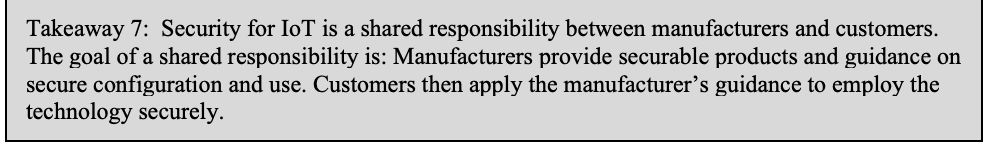
要点 7: IoT のセキュリティは、製造者と顧客の共同責任です。共同責任の目標は次のとおりです。製造者は、セキュリティ保護可能な製品と、セキュアな構成および使用に関するガイダンスを提供します。そして顧客は、製造者のガイダンスを適用して、その技術をセキュアに使用します。
Security for IoT devices cannot be achieved through technology alone. Eighty-two percent of responses to one poll question agreed that the responsibility for securing IoT devices is shared between manufacturer and customer (poll #9). On the manufacturer side, devices should incorporate appropriate technical cybersecurity capabilities so that secure deployment and operation are feasible, and those technical capabilities should be complemented with non-technical supporting capabilities such as documentation explaining secure configurations, software updates to address discovered vulnerabilities, and publication of security best practices for their products. Customers, then, are responsible for implementing IoT devices in accordance with manufacturer guidance, ensuring devices have connectivity to receive updates, and monitoring devices to ensure continued security. Customers also follow their own established policies to appropriately mitigate the risks that IoT devices bring within their system(s). The support procedures will typically use the manufacturer’s guidance. Bo Berlas suggested that a solution similar to FedRAMP would be appropriate: “in cloud with FedRAMP there is this notion of customer responsibility such that what the vendor does together with what the customer does effectively results in a secure profile and I think that logic can generally align here too.”
IoT デバイスのセキュリティは、技術だけでは達成できません。あるアンケートの質問への回答の 82 パーセントが、IoT デバイスを保護する責任は製造者と顧客で共有されることに同意しました（アンケート #9）。製造者の側では、セキュアな展開と運用が実現可能となるよう、デバイスに適切な技術的サイバーセキュリティ能力を組み込むべきです。そして、その技術的な能力を、セキュアな構成を説明する文書、発見された脆弱性に対処するソフトウェア更新、自社製品のセキュリティのベストプラクティスの公開といった、非技術的な支援能力で補完すべきです。そのうえで顧客は、製造者のガイダンスに従って IoT デバイスを実装し、更新を受け取るための接続性をデバイスが備えていることを確保し、継続的なセキュリティを確保するためにデバイスを監視する責任を負います。顧客はまた、自ら確立したポリシーに従い、IoT デバイスが自らのシステム内にもたらすリスクを適切に軽減します。支援のための手順は通常、製造者のガイダンスを利用します。Bo Berlas 氏は、FedRAMP に似た解決策が適切であると示唆しました。「クラウドの FedRAMP には顧客の責任という考え方があり、ベンダーが行うことと顧客が行うことが相まって、結果的にセキュアなプロファイルになります。この論理は、ここでも概ね当てはまると思います。」
Takeaway 8: Manufacturer support for IoT device security is essential for the shared responsibility model to succeed.
原本PDFの抜粋画像
要点 8: 共同責任モデルが成功するには、IoT デバイスのセキュリティに対する製造者の支援が不可欠です。
Manufacturer support comprises a number of activities, especially documentation and software updates. An on-going challenge for customers and users in assessing and improving IoT device cybersecurity is inadequate documentation of device characteristics. Lack of documentation hinders both security assessments and the ability to select compensating security controls to address IoT device cybersecurity shortcomings. While some manufacturers do provide substantive documentation, many provide very little, leaving customer organizations starved for information on which to base risk assessments. Both the development of security solutions and the assessment of those solutions require information about, for example, the network communications patterns expected for IoT devices.
製造者の支援は、特に文書化とソフトウェア更新を中心に、多くの活動からなります。顧客と利用者が IoT デバイスのサイバーセキュリティを評価し向上させる際の継続的な課題は、デバイスの特性に関する文書化が不十分なことです。文書の欠如は、セキュリティ評価と、IoT デバイスのサイバーセキュリティ上の欠点に対処する代替のセキュリティ管理策を選択する能力の両方を妨げます。製造者の中には実質的な文書を提供しているところもありますが、提供される文書がごくわずかな製造者も多く、顧客組織はリスクアセスメントの根拠とする情報に飢えた状態に置かれています。セキュリティ解決策の開発も、その解決策の評価も、たとえば IoT デバイスに想定されるネットワーク通信のパターンに関する情報を必要とします。
Manufacturer communications regarding IoT device cybersecurity need to address a range of audiences with diverse levels of sophistication and understanding of the cybersecurity challenge. This includes communication both at the consumer level and with organizational procurement activities. Vendors need to convey information about product operation and about using device cybersecurity features, as well as more general communications regarding manufacturer procedures and commitments for vulnerability disclosure, software update frequency and mechanisms, and duration of support commitments for IoT products. Derail Heiland explained “we need to be able to get detailed information around those specific security topics on how do we reduce risk by properly implementing. How do we deploy into our organization? How do we get the detailed information to help us make those security risks evaluations for better deploying the technology? Often we are not seeing that information.”
IoT デバイスのサイバーセキュリティに関する製造者のコミュニケーションは、サイバーセキュリティ上の課題に対する洗練度や理解度が多様な、幅広い対象者に向けたものである必要があります。これには、消費者レベルでのコミュニケーションと、組織の調達活動に対するコミュニケーションの両方が含まれます。ベンダーは、製品の動作とデバイスのサイバーセキュリティ機能の使用に関する情報を伝える必要があるほか、脆弱性の開示、ソフトウェア更新の頻度と仕組み、IoT 製品のサポート提供期間のコミットメントに関する製造者の手順とコミットメントについて、より一般的なコミュニケーションも行う必要があります。Derail Heiland 氏は次のように説明しました。「私たちは、適切に実装することでリスクをどう減らすかについて、それらの特定のセキュリティトピックに関する詳細な情報を得られる必要があります。組織にどう展開すればよいのか。この技術をよりよく展開するためのセキュリティリスクの評価に役立つ詳細な情報を、どう入手すればよいのか。多くの場合、そうした情報が見当たりません。」
An essential element of manufacturer communications is clear explanation of customer responsibilities for IoT device cybersecurity. Consumers, for example, primarily need basic installation and configuration guidance, whereas organizational customers need more extensive documentation to address device configurability, deployment of devices at scale, and information enabling the organization to ensure it is able to satisfy its legal obligations. All customers need clarity regarding available manufacturer communications channels, frequency of software updates, and end-of-life dates beyond which specific IoT devices will no longer be supported.
製造者のコミュニケーションの不可欠な要素は、IoT デバイスのサイバーセキュリティに関する顧客の責任を明確に説明することです。たとえば消費者は主に、基本的な設置と構成のガイダンスを必要とするのに対し、組織の顧客は、デバイスの構成可能性、デバイスの大規模な展開、組織が法的義務を確実に満たせるようにする情報に対処する、より広範な文書を必要とします。すべての顧客は、利用できる製造者のコミュニケーションチャネル、ソフトウェア更新の頻度、そして特定の IoT デバイスがそれ以降サポートされなくなるサポート終了日について、明確さを必要とします。
Takeaway 9: Security for IoT should be addressed using a risk management approach in concert with that used for traditional information technology, although different technical solutions may be needed for each.
原本PDFの抜粋画像
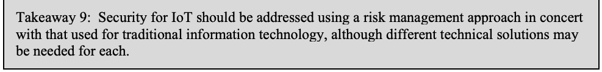
要点 9: IoT のセキュリティは、従来の情報技術に用いられるものと協調したリスクマネジメントのアプローチを用いて対処すべきです。ただし、それぞれに異なる技術的な解決策が必要となる場合があります。
Workshop panelists agreed that IoT devices introduce varying amounts of risk into their environments. For example, IoT devices regulating physical access or supporting warning systems may represent much greater risk than so-called “smart” appliances; however, attacks using apparently low-risk devices (e.g., an aquarium thermometer, a network-connected traffic sign) as paths into owner information systems have had serious consequences. Detection and identification of the IoT devices present in an environment also presents a significant challenge. Information about individual devices can be difficult to obtain, although there are efforts to crowdsource such information to ease the challenge of device identification.
ワークショップのパネリストは、IoT デバイスが環境にもたらすリスクの大きさはさまざまであるという点で一致しました。たとえば、物理的なアクセスを制御するデバイスや警報システムを支えるデバイスは、いわゆる「スマート」家電よりはるかに大きなリスクを表す可能性があります。しかし、一見リスクの低いデバイス（たとえば水槽の温度計やネットワーク接続された交通標識）を所有者の情報システムへの経路として使った攻撃は、深刻な結果をもたらしています。環境内に存在する IoT デバイスの検知と識別も、大きな課題です。個々のデバイスに関する情報は入手が難しい場合がありますが、デバイス識別の課題を和らげるために、そうした情報をクラウドソーシングで集める取り組みもあります。
The introduction of IoT devices may require a shift of mindset when applying the NIST Risk Management Framework (RMF). As stated by Grant Schneider: “Risk management: that's really what this boils down to.” System owners and assessors need to clearly understand guidance that federal information systems include IoT devices, which must be viewed as part of the enterprise information system and treated as components of the system(s) being assessed. Katherine Gronberg observed that a goal of federal programs “is ultimately to assess and then mitigate risk on the networks which include IoT and OT presence.” Agencies must ensure that IoT devices are included within the scope of their risk management approach, whether assessing enterprise IT, specific IT systems, or operational technology (OT) systems where IoT devices have been introduced. Security controls from the SP 800-53 catalog must be considered in the assessment of IoT devices within agency systems.
IoT デバイスの導入は、NIST リスクマネジメントフレームワーク（RMF）を適用する際に、考え方の転換を必要とする場合があります。Grant Schneider 氏が述べたように、「リスクマネジメント、結局のところ本当にそこに行き着きます。」システムの所有者と評価者は、連邦情報システムに IoT デバイスが含まれるというガイダンスを明確に理解する必要があります。IoT デバイスは、エンタープライズ情報システムの一部と見なされ、評価対象のシステムの構成要素として扱われなければなりません。Katherine Gronberg 氏は、連邦プログラムの目標は「最終的に、IoT と OT が存在するネットワークのリスクを評価し、軽減することです」と述べました。機関は、エンタープライズ IT、特定の IT システム、IoT デバイスが導入された運用技術（OT）システムのいずれを評価する場合でも、IoT デバイスがリスクマネジメントのアプローチの範囲に含まれることを確保しなければなりません。機関のシステム内の IoT デバイスの評価では、SP 800-53 カタログのセキュリティ管理策を考慮しなければなりません。
No single security solution is appropriate for all devices across this spectrum. As IoT devices are integrated into federal information systems, potential issues arise regarding the ability to both understand and modify device configurations in order to bring them into alignment with security controls imposed by the RMF process (e.g., implementing a mandatory warning banner in the user interface of an IoT device).
この幅広い範囲のすべてのデバイスに適した単一のセキュリティ解決策はありません。IoT デバイスが連邦情報システムに統合されるにつれ、RMF のプロセスによって課されるセキュリティ管理策（たとえば IoT デバイスのユーザーインタフェースへの必須の警告バナーの実装）に合わせるために、デバイスの構成を理解し変更する能力に関する潜在的な問題が生じます。
The introduction of IoT devices creates significant challenges for security assessment of federal information systems. Cybersecurity must be assessed both at the component level (i.e., individual IoT devices) and the system level (i.e., the integration of a set of IoT devices with traditional IT in a specific operating environment). An additional challenge is security testing of systems with IoT devices, especially when evaluating the impacts of updates to those devices. For example, if automatic security updates of IoT devices are enabled, when and by whom are tests of those updates to be performed?
IoT デバイスの導入は、連邦情報システムのセキュリティ評価に重大な課題をもたらします。サイバーセキュリティは、構成要素レベル（すなわち個々の IoT デバイス）と、システムレベル（すなわち特定の運用環境における一連の IoT デバイスと従来の IT との統合）の両方で評価されなければなりません。さらなる課題は、IoT デバイスを含むシステムのセキュリティテスト、特にそれらのデバイスの更新による影響の評価です。たとえば、IoT デバイスの自動セキュリティ更新が有効な場合、その更新のテストは、いつ、誰が実施するのでしょうか。
Software updates for IoT devices are a crucial aspect of cybersecurity. Automation of updating is generally one of the strongest mechanisms for minimizing device vulnerability and opportunities for attack, especially in the consumer space. Workshop participants favored automated update mechanisms that still offer device owners a measure of control over when updates are applied (poll #7). In the context of a federal information system, a complicating factor is the need to test updates prior to application due to their potential to affect a system’s security posture. In some cases, updates can significantly alter the capabilities of an IoT device (e.g., by activating hardware capabilities that have been latent), with correspondingly significant implications for the information system’s risk posture. Federal information system owners need to establish a process to assign responsibility for and establish an environment to enable testing of updates.
IoT デバイスのソフトウェア更新は、サイバーセキュリティの重要な側面です。更新の自動化は一般に、特に消費者分野で、デバイスの脆弱性と攻撃の機会を最小化する最も強力な仕組みの一つです。ワークショップの参加者は、更新がいつ適用されるかについてデバイスの所有者が一定の制御を保てる自動更新の仕組みを支持しました（アンケート #7）。連邦情報システムの文脈では、更新がシステムのセキュリティ態勢に影響しうるため、適用前に更新をテストする必要があることが複雑化の要因となります。場合によっては、更新が IoT デバイスの能力を大きく変えることがあり（たとえば、潜在していたハードウェア機能の有効化）、情報システムのリスク態勢にも、それに応じた重大な影響があります。連邦情報システムの所有者は、更新のテストに対する責任を割り当てるプロセスを確立し、そのテストを可能にする環境を整える必要があります。
Takeaway 10: Securely integrating IoT devices into modern networks will require moving beyond legacy network security solutions.
原本PDFの抜粋画像
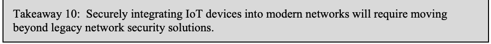
要点 10: IoT デバイスを現代的なネットワークに安全に統合するには、従来のネットワークセキュリティ解決策を超えていく必要があります。
Network segmentation, traffic shaping with firewalls, and other legacy network security solutions are severely challenged by the introduction of IoT devices. IoT devices as elements of federal information systems may present very different security characteristics from traditional IT system elements, yet all must support the overall security goals and objectives for the complete information system. Bo Berlas observed “Traditionally we’ve been dependent on VLANS and firewalls and things of that nature, I think we need to go through and advance that understanding to start to look at for example with network access control tools, … looking at device profiling, … looking at newer concepts like zero trust.”
ネットワークのセグメンテーション、ファイアウォールによるトラフィックシェーピングなどの従来のネットワークセキュリティ解決策は、IoT デバイスの導入によって大きな課題に直面しています。連邦情報システムの要素としての IoT デバイスは、従来の IT システムの要素とは大きく異なるセキュリティ特性を持つ場合がありますが、すべてが情報システム全体のセキュリティの目的と目標を支えなければなりません。Bo Berlas 氏は次のように述べました。「従来、私たちは VLAN やファイアウォールなどに依存してきましたが、その理解を進めて、たとえばネットワークアクセス制御ツール、…デバイスのプロファイリング、…ゼロトラストのような新しい概念に目を向け始める必要があると思います。」
The threat environment associated with IoT devices can be more dynamic than that associated with other products, including traditional IT products. For example, not all IoT devices support software updates to remove vulnerabilities. When software updates are possible, updates to deployed IoT devices can change their operational and cybersecurity characteristics. Such changes can, in turn, change the risk characteristics of the systems in which the devices are deployed. In parallel, attackers seek new avenues for exploitation of IoT devices as their characteristics evolve. The dynamic nature of IoT devices mitigates against the use of traditional product assessment and certification models for IoT devices; a one-time certification becomes meaningless as the device changes over time.
IoT デバイスに関連する脅威環境は、従来の IT 製品を含む他の製品に関連するものよりも動的である場合があります。たとえば、脆弱性を取り除くソフトウェア更新にすべての IoT デバイスが対応しているわけではありません。ソフトウェア更新が可能な場合でも、展開済みの IoT デバイスへの更新は、その運用上およびサイバーセキュリティ上の特性を変える可能性があります。そのような変化は、次に、デバイスが展開されているシステムのリスク特性を変える可能性があります。同時に、攻撃者は、IoT デバイスの特性が進化するにつれ、その悪用の新たな経路を探します。IoT デバイスの動的な性質は、従来の製品評価・認証モデルを IoT デバイスに用いることを妨げます。デバイスが時間とともに変化するため、一度きりの認証は意味をなさなくなります。
Another challenge is dealing with security incidents involving devices performing critical functions. It may be unacceptable, for example, to completely quarantine a device that performs a mission critical function dependent on Internet connectivity. A related consideration is the loss of manufacturer support when Internet connectivity is withdrawn, both in terms of direct actions like software updates, and considerations of whether manufacturers honor product warranties.
もう一つの課題は、重要な機能を果たすデバイスが関わるセキュリティインシデントへの対処です。たとえば、インターネット接続に依存するミッションクリティカルな機能を果たすデバイスを完全に隔離することは、受け入れられない場合があります。関連する考慮事項として、インターネット接続が断たれたときの製造者の支援の喪失があります。これは、ソフトウェア更新のような直接的な措置と、製造者が製品保証を履行するかどうかという考慮事項の両方に関わります。
When combined with edge computing concepts enabled by new technologies such as 5G, this creates difficulty in defining the boundaries of a federal information system by introducing system topologies that vary greatly from traditional models. This technology enables the expanded use of edge computing deployed outside the traditional boundaries that define federal information systems, as well as other “smart” solutions, both of which could create situations where 5G-enabled IoT devices may be capturing and processing federal data while being physically and/or logically outside the bounds of any particular federal information system.
5G のような新技術によって可能になるエッジコンピューティングの概念と組み合わさると、従来のモデルとは大きく異なるシステムトポロジーが導入されるため、連邦情報システムの境界を定義することが困難になります。この技術は、連邦情報システムを定義する従来の境界の外に展開されるエッジコンピューティングや、その他の「スマート」ソリューションの利用拡大を可能にします。その両方が、5G に対応した IoT デバイスが、特定の連邦情報システムの境界の物理的、論理的、またはその両方の外側にありながら、連邦のデータを取得し処理している状況を生み出す可能性があります。
Takeaway 11: Automation protocols provide promise for deploying, on-boarding, and securely using IoT devices at scale in the enterprise.
原本PDFの抜粋画像
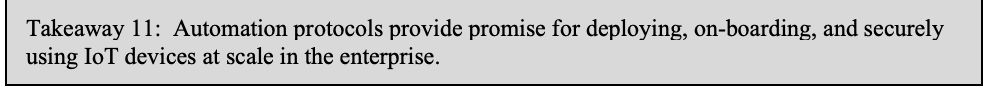
要点 11: 自動化プロトコルは、エンタープライズで IoT デバイスを大規模に展開し、オンボーディングし、セキュアに使用するうえで有望です。
Device discovery and on-boarding is a known major challenge with IoT devices. Katherine Gronberg stated that IoT devices are “actually very difficult to detect. It is actually hard, we find agencies don't know how much is actually on their networks.” Scott Rose observed “in order for IoT to succeed you cannot rely on individuals to set up and administer every individual IoT device. You will have to have this kind of autonomic network configuration.” Manufacturers and standards organizations have begun developing approaches to address some of these concerns:
デバイスの検出とオンボーディングは、IoT デバイスの主要な課題として知られています。Katherine Gronberg 氏は、IoT デバイスは「実際には検出が非常に困難です。実際に難しく、機関は自らのネットワークに実際にどれだけのものがあるかを把握していないことがわかっています」と述べました。Scott Rose 氏は、「IoT が成功するためには、個々の IoT デバイスすべてを個人がセットアップし管理することに頼ることはできません。この種の自律的なネットワーク構成が必要になります」と述べました。製造者と標準化機関は、これらの懸念の一部に対処するアプローチの開発に着手しています。
•The Internet Engineering Task Force (IETF) has a group developing the Bootstrapping Remote Secure Key Infrastructure (BRSKI) protocol, intended to provide a solution for secure zero-touch (automated) bootstrap of new (unconfigured) devices. [ID-BRSKI]
•Internet Engineering Task Force（IETF）には、新しい（未構成の）デバイスをセキュアかつゼロタッチ（自動）でブートストラップする解決策の提供を意図した Bootstrapping Remote Secure Key Infrastructure（BRSKI）プロトコルを開発するグループがあります。[ID-BRSKI]
•The IETF’s Manufacturer Usage Description (MUD) is a protocol for IoT devices that provides a means for end devices to signal to the network what sort of access and network functionality they require to properly function. The initial focus is on access control. The MUD protocol is documented in [RFC8520].
•IETF の Manufacturer Usage Description（MUD）は、エンドデバイスが適切に機能するためにどのようなアクセスとネットワーク機能を必要とするかをネットワークに伝える手段を提供する、IoT デバイス向けのプロトコルです。当初はアクセス制御に焦点を当てています。MUD プロトコルは [RFC8520] に記載されています。
Takeaway 12: The supply chain5 for IoT devices is both a source of security risk and a potential opportunity to encourage improvements.
原本PDFの抜粋画像
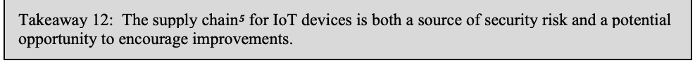
要点 12: IoT デバイスのサプライチェーン5は、セキュリティリスクの源であると同時に、改善を促す潜在的な機会でもあります。
The supply chain represents both challenge and opportunity for IoT device cybersecurity. Grant Schneider stated that “supply chain risk management … [is of] significant interest both on the part of Congress and on the part of the executive branch.” The complexity and opacity of current IoT supply chains raises concerns about opportunities for bad actors to negatively impact device cybersecurity and a general inability for purchasers to have confidence in the characteristics of any particular product emerging from that supply chain. Apostolos Malatras noted that the European Union Agency for Cybersecurity (ENISA) has observed that, compared to other manufacturing sectors, “the relationship between suppliers and providers, between the peers in the supply chain are not mature at all. And they change very frequently.” However, there are also opportunities to share information gathered about the supply chain, and some organizations are focusing on the supply chain as a more effective place to focus cybersecurity efforts: rather than working to raise customer awareness they instead place pressure on manufacturers to configure their supply chains to produce more secure products. There is also potential for other mechanisms, such as third-party assessment and certifications and regulations requiring recall procedures, to have a positive impact on IoT device cybersecurity through the supply chain.
サプライチェーンは、IoT デバイスのサイバーセキュリティにとって課題でもあり機会でもあります。Grant Schneider 氏は、「サプライチェーンリスクマネジメントは、議会と行政府の双方にとって非常に関心の高い分野です」と述べました。現在の IoT サプライチェーンの複雑さと不透明さは、悪意ある者がデバイスのサイバーセキュリティに悪影響を及ぼす機会があることへの懸念と、そのサプライチェーンから生まれる個々の製品の特性について、購入者が一般に確信を持てないことへの懸念を高めています。Apostolos Malatras 氏は、欧州連合サイバーセキュリティ機関（ENISA）が、他の製造業の分野と比べ、「サプライヤーとプロバイダーの関係、サプライチェーン内の同業者どうしの関係は、まったく成熟していません。しかも、非常に頻繁に変わります」と観察していることを指摘しました。しかし、サプライチェーンについて収集された情報を共有する機会もあり、サイバーセキュリティの取り組みを集中させるより効果的な場所としてサプライチェーンに焦点を当てている組織もあります。それらの組織は、顧客の意識を高めるのではなく、製造者にサプライチェーンを構成してよりセキュアな製品を生み出すよう圧力をかけています。第三者による評価と認証や、リコール手順を義務づける規制など、ほかの仕組みにも、サプライチェーンを通じて IoT デバイスのサイバーセキュリティに好影響を与える可能性があります。
Grant Schneider stated that the U.S. Federal Acquisition Security Council (FASC) within the Office of Management and Budget (OMB) has been tasked to look at the potential for shared services for federal agencies in the area of supply chain risk management. The goal is to enable the sharing of supply chain information across federal agencies and with the private sector. This would enable organizations with different levels of capability to implement consistent amounts of due diligence when evaluating supply chain risk.
Grant Schneider 氏は、行政管理予算局（OMB）内の米国 Federal Acquisition Security Council（FASC）が、サプライチェーンリスクマネジメントの分野で連邦機関向けの共有サービスの可能性を検討する任務を負っていると述べました。その目標は、連邦機関間および民間部門との間でサプライチェーン情報を共有できるようにすることです。これにより、能力の水準が異なる組織が、サプライチェーンリスクを評価する際に、一貫した水準のデューデリジェンスを実施できるようになります。
Takeaway 13: Conformance assessments and third party certifications can assist customers with selection of IoT security products with suitable security.
原本PDFの抜粋画像
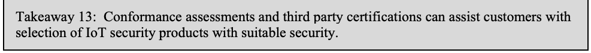
要点 13: 適合性評価と第三者認証は、顧客が適切なセキュリティを備えた IoT セキュリティ製品を選択する助けとなります。
Consumers are familiar with a variety of common product labeling regimes, such as for nutritional information and product safety (e.g., Underwriters Labs [UL]). A proposed approach to providing confidence measures around IoT device cybersecurity is the development of a roughly equivalent form of review and labeling. However, creating such a testing and labeling regime would likely be a slow and expensive process.
消費者は、栄養情報や製品の安全性（たとえば Underwriters Labs [UL]）など、一般的なさまざまな製品表示制度に慣れています。IoT デバイスのサイバーセキュリティに関する信頼の尺度を提供するために提案されているアプローチの一つは、ほぼ同等の形式のレビューと表示の整備です。しかし、そのようなテストと表示の制度を作るプロセスは、時間がかかり、費用もかさむ可能性が高いです。
A related idea is the concept of a labeling authority, a non-profit, non-governmental organization that would serve as a project manager for centralized certification and labeling efforts in the United States. The authority would accredit other organizations to take on specific IoT technology verticals, such as medical devices or connected automobiles. Mike Bergman noted that “The IoT ecosystem is enormous. It needs more than a single type of baseline and more than one type of confidence mechanism. In that broad landscape there is room for third-party assessment and supplier declaration of conformity for certification and labeling and so on.” Rob Morgus called participants’ attention to the U.S. Cyberspace Solarium Commission’s “recommendation for creation of a national cybersecurity certification and labeling authority. … It would be a nonprofit, nongovernmental organization to serve as a project manager for centralized certification and labeling efforts in the United States, empowered to accredit other organizations to sort of take on specific verticals of technology, like certain IoT verticals.”
関連する考え方として、表示機関の概念があります。これは、米国における一元的な認証と表示の取り組みのプロジェクトマネージャーとして機能する、非営利の非政府組織です。この機関は、医療機器やコネクテッドカーなど、特定の IoT 技術の垂直分野を担当する他の組織を認定します。Mike Bergman 氏は次のように指摘しました。「IoT エコシステムは巨大です。1 種類のベースラインや 1 種類の信頼の仕組みだけでは足りません。その幅広い領域には、認証や表示などのための、第三者評価やサプライヤーによる適合宣言の余地があります。」Rob Morgus 氏は、参加者に対し、米国 Cyberspace Solarium Commission の「全国的なサイバーセキュリティ認証・表示機関の創設に関する勧告。…これは、米国における一元的な認証と表示の取り組みのプロジェクトマネージャーとして機能する、非営利の非政府組織であり、特定の IoT の垂直分野のような、特定の技術の垂直分野を他の組織が担当できるよう認定する権限を持つ」ものに注意を向けました。
3 Next Steps
3 今後の手順
The NIST Cybersecurity for IoT program has identified three next steps based on the workshop:
NIST Cybersecurity for IoT プログラムは、ワークショップに基づき、3 つの今後の手順を特定しました。
1.Complete the Federal Profile. The program needs to complete its work to create the federal profile, gather public feedback, and finalize the profile. This work is underway and the results will be published as NISTIR 8259D, Profile of the IoT Core Baseline for the Federal Government.
1.連邦プロファイルの完成。プログラムは、連邦プロファイルを作成する作業を完了し、一般からのフィードバックを集め、プロファイルを確定する必要があります。この作業は進行中であり、成果は NISTIR 8259D, Profile of the IoT Core Baseline for the Federal Government として公開される予定です。
2.Provide Guidance for Developing Profiles. Other groups have expressed interest in developing profiles of the core baseline for use within their own sectors of interest (e.g., vertical market sector, regulatory scope). The program is documenting the process that has been worked out while developing the federal profile. That process will be published as NISTIR 8259C, Creating a Profile Using the IoT Core Baseline and Non-Technical Baseline.
2.プロファイル策定のガイダンスの提供。ほかのグループが、それぞれの関心分野（たとえば垂直市場分野、規制の範囲）で使用するためにコアベースラインのプロファイルを作成することに関心を示しています。プログラムは、連邦プロファイルの作成中に確立されたプロセスを文書化しています。そのプロセスは NISTIR 8259C, Creating a Profile Using the IoT Core Baseline and Non-Technical Baseline として公開される予定です。
3.Evaluate Approaches for Establishing Confidence in IoT Device Cybersecurity. Workshop participants indicated a desire for greater specificity regarding the use of conformance assessments and other confidence mechanisms such as labels and self-certification. These confidence mechanisms can be an important component of the IoT cybersecurity solution space. The program will begin exploring, in concert with interested government and industry organizations, approaches for gaining confidence in the cybersecurity capabilities of IoT devices that address the needs of both IoT device users and manufacturers.
3.IoT デバイスのサイバーセキュリティに対する信頼を確立するアプローチの評価。ワークショップの参加者は、適合性評価と、ラベルや自己認証といったその他の信頼の仕組みの使用について、より具体的に示されることを望みました。これらの信頼の仕組みは、IoT のサイバーセキュリティの解決策の領域の重要な構成要素となりえます。プログラムは、関心を持つ政府機関や産業界の組織と協力して、IoT デバイスのサイバーセキュリティ能力に対する信頼を得るための、IoT デバイスの利用者と製造者の双方のニーズに対応するアプローチの検討を始めます。
References
参考文献
[CYBSTRAT] The White House (2018) National Cyber Strategy of the United States of America. (The White House, Washington, D.C.). Available at https://www.whitehouse.gov/wp-content/uploads/2018/09/National-Cyber-Strategy.pdf
[CYBSTRAT] The White House (2018) National Cyber Strategy of the United States of America. (The White House, Washington, D.C.). 入手先: https://www.whitehouse.gov/wp-content/uploads/2018/09/National-Cyber-Strategy.pdf
[ID-BRSKI] Pritikin M, Richardson M, Eckert TTE, Behringer MH, Watsen KW (2020) Bootstrapping Remote Secure Key Infrastructures (BRSKI). (Internet Engineering Task Force, Anima Working Group). Internet Draft. Available at https://tools.ietf.org/html/draft-richardson-anima-brski-renamed-00
[ID-BRSKI] Pritikin M, Richardson M, Eckert TTE, Behringer MH, Watsen KW (2020) Bootstrapping Remote Secure Key Infrastructures (BRSKI). (Internet Engineering Task Force, Anima Working Group). Internet Draft. 入手先: https://tools.ietf.org/html/draft-richardson-anima-brski-renamed-00
[NISTIR8228] Boeckl KR, Fagan MJ, Fisher WM, Lefkovitz NB, Megas KN, Nadeau EM, Piccarreta BM, Gabel O'Rourke D, Scarfone KA (2019) Considerations for Managing Internet of Things (IoT) Cybersecurity and Privacy Risks. (National Institute of Standards and Technology, Gaithersburg, MD), NIST Interagency or Internal Report (IR) 8228. https://doi.org/10.6028/NIST.IR.8228
[NISTIR8228] Boeckl KR, Fagan MJ, Fisher WM, Lefkovitz NB, Megas KN, Nadeau EM, Piccarreta BM, Gabel O'Rourke D, Scarfone KA (2019) Considerations for Managing Internet of Things (IoT) Cybersecurity and Privacy Risks. (National Institute of Standards and Technology, Gaithersburg, MD), NIST Interagency or Internal Report (IR) 8228. https://doi.org/10.6028/NIST.IR.8228
[NISTIR8259A] Fagan MJ, Megas KN, Scarfone KA, Smith M (2020) IoT Device Cybersecurity Capability Core Baseline. (National Institute of Standards and Technology, Gaithersburg, MD), NIST Interagency or Internal Report (IR) 8259A. https://doi.org/10.6028/NIST.IR.8259A
[NISTIR8259A] Fagan MJ, Megas KN, Scarfone KA, Smith M (2020) IoT Device Cybersecurity Capability Core Baseline. (National Institute of Standards and Technology, Gaithersburg, MD), NIST Interagency or Internal Report (IR) 8259A. https://doi.org/10.6028/NIST.IR.8259A
[PRGM] National Institute of Standards and Technology (2021) NIST Cybersecurity for IoT program. Available at https://www.nist.gov/programs-projects/nist-cybersecurity-iot-program
[PRGM] National Institute of Standards and Technology (2021) NIST Cybersecurity for IoT program. 入手先: https://www.nist.gov/programs-projects/nist-cybersecurity-iot-program
[RFC8520] Lear E, Droms R, Romascanu D (2019) Manufacturer Usage Description Specification. (Internet Engineering Task Force), IETF RFC 8520. https://doi.org/10.17487/RFC8520
[RFC8520] Lear E, Droms R, Romascanu D (2019) Manufacturer Usage Description Specification. (Internet Engineering Task Force), IETF RFC 8520. https://doi.org/10.17487/RFC8520
[SECTECH] Strengthening and Enhancing Cyber-capabilities by Utilizing Risk Exposure Technology Act, Pub. L. 115-390, 132 Stat. 5173. https://www.govinfo.gov/app/details/PLAW-115publ390
[SECTECH] Strengthening and Enhancing Cyber-capabilities by Utilizing Risk Exposure Technology Act, Pub. L. 115-390, 132 Stat. 5173. https://www.govinfo.gov/app/details/PLAW-115publ390
[SP800-53] Joint Task Force (2020) Security and Privacy Controls for Information Systems and Organizations. (National Institute of Standards and Technology, Gaithersburg, MD), NIST Special Publication (SP) 800-53, Rev. 5, Includes updates as of December 10, 2020. https://doi.org/10.6028/NIST.SP.800-53r5
[SP800-53] Joint Task Force (2020) Security and Privacy Controls for Information Systems and Organizations. (National Institute of Standards and Technology, Gaithersburg, MD), NIST Special Publication (SP) 800-53, Rev. 5, 2020年12月10日時点の更新を含む. https://doi.org/10.6028/NIST.SP.800-53r5
[Workshop] National Institute of Standards and Technology (2020) Building the Federal Profile For IoT Device Cybersecurity: Next Steps for Securing Federal Systems. Available at https://www.nist.gov/news-events/events/2020/07/building-federal-profile-iot-device-cybersecurity-next-steps-securing
[Workshop] National Institute of Standards and Technology (2020) Building the Federal Profile For IoT Device Cybersecurity: Next Steps for Securing Federal Systems. 入手先: https://www.nist.gov/news-events/events/2020/07/building-federal-profile-iot-device-cybersecurity-next-steps-securing
付録 A: アンケート結果
Twelve online polls were conducted during the workshop, divided equally between the two days. The polls gathered participant viewpoints on a variety of topics related to the challenges of cybersecurity for IoT devices. Poll questions and results are provided below.
ワークショップ中に 12 回のオンラインアンケートが実施され、2 日間に均等に分けられました。アンケートでは、IoT デバイスのサイバーセキュリティの課題に関するさまざまなトピックについて、参加者の見解を収集しました。アンケートの質問と結果を以下に示します。
A.1 Most Important Area to Articulate Federal Expectations
A.1 連邦の期待を明確にすべき最も重要な領域
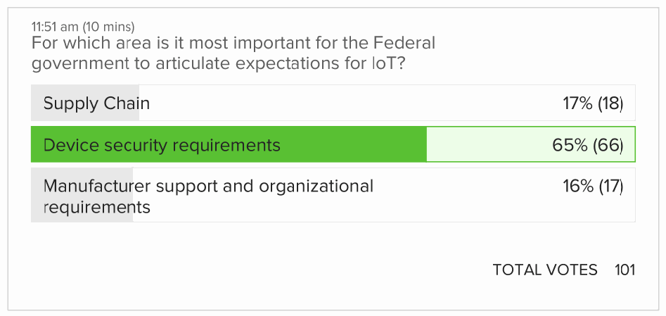
投票の結果画面です。「11:51 am (10 mins)」、設問は「For which area is it most important for the Federal government to articulate expectations for IoT?」です。選択肢と割合（票数）は、「Supply Chain」17% (18)、「Device security requirements」65% (66)、「Manufacturer support and organizational requirements」16% (17)です。最も多い「Device security requirements」が緑色で強調されています。総票数は「TOTAL VOTES 101」です。
A.2 Appropriate Manufacturer Incentives for Adequate Security
A.2 十分なセキュリティのための製造者への適切なインセンティブ
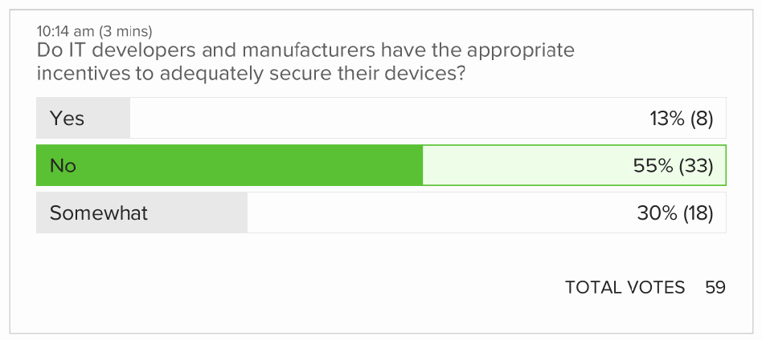
投票の結果画面です。「10:14 am (3 mins)」、設問は「Do IT developers and manufacturers have the appropriate incentives to adequately secure their devices?」です。選択肢と割合（票数）は、「Yes」13% (8)、「No」55% (33)、「Somewhat」30% (18)です。最も多い「No」が緑色で強調されています。総票数は「TOTAL VOTES 59」です。
A.3 Level of Federal Challenge for IoT Cybersecurity
A.3 IoT のサイバーセキュリティにおける連邦の課題の水準
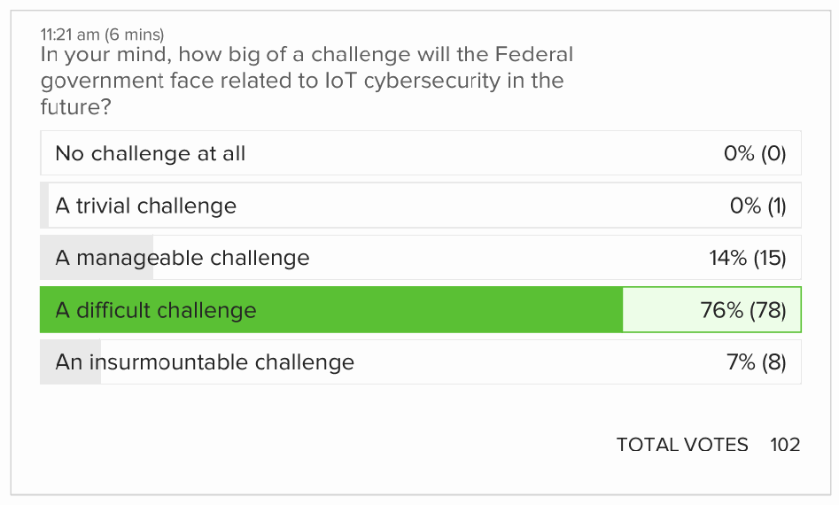
投票の結果画面です。「11:21 am (6 mins)」、設問は「In your mind, how big of a challenge will the Federal government face related to IoT cybersecurity in the future?」です。選択肢と割合（票数）は、「No challenge at all」0% (0)、「A trivial challenge」0% (1)、「A manageable challenge」14% (15)、「A difficult challenge」76% (78)、「An insurmountable challenge」7% (8)です。最も多い「A difficult challenge」が緑色で強調されています。総票数は「TOTAL VOTES 102」です。
A.4 Should Government Mandate IoT Device Cybersecurity
A.4 政府が IoT デバイスのサイバーセキュリティを義務化すべきか
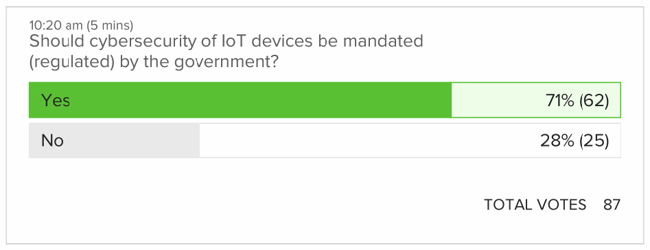
投票の結果画面です。「10:20 am (5 mins)」、設問は「Should cybersecurity of IoT devices be mandated (regulated) by the government?」です。選択肢と割合（票数）は、「Yes」71% (62)、「No」28% (25)です。最も多い「Yes」が緑色で強調されています。総票数は「TOTAL VOTES 87」です。
A.5 Most Promising Technical Approaches for Managing IoT Cybersecurity Risks
A.5 IoT のサイバーセキュリティリスクを管理するうえで最も有望な技術的アプローチ
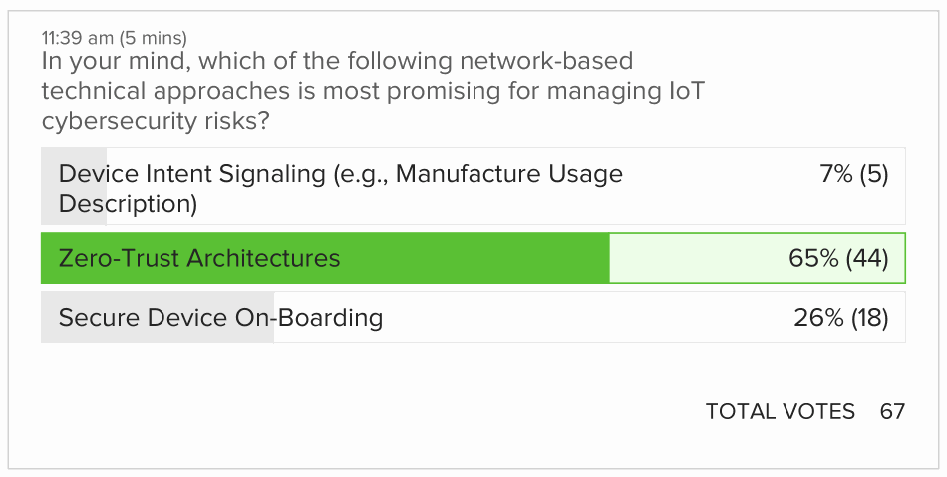
投票の結果画面です。「11:39 am (5 mins)」、設問は「In your mind, which of the following network-based technical approaches is most promising for managing IoT cybersecurity risks?」です。選択肢と割合（票数）は、「Device Intent Signaling (e.g., Manufacture Usage Description)」7% (5)、「Zero-Trust Architectures」65% (44)、「Secure Device On-Boarding」26% (18)です。最も多い「Zero-Trust Architectures」が緑色で強調されています。総票数は「TOTAL VOTES 67」です。
A.6 Level of Concern Regarding Security of IoT Devices
A.6 IoT デバイスのセキュリティに関する懸念の水準
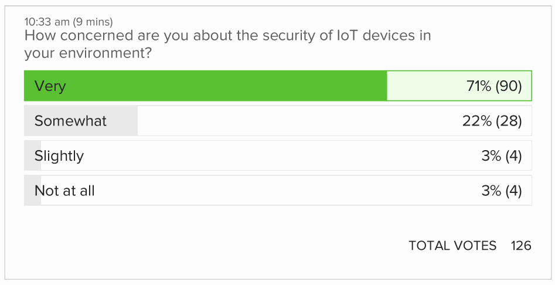
投票の結果画面です。「10:33 am (9 mins)」、設問は「How concerned are you about the security of IoT devices in your environment?」です。選択肢と割合（票数）は、「Very」71% (90)、「Somewhat」22% (28)、「Slightly」3% (4)、「Not at all」3% (4)です。最も多い「Very」が緑色で強調されています。総票数は「TOTAL VOTES 126」です。
A.7 Preferred Management of Device Updates
A.7 デバイスの更新の望ましい管理方法
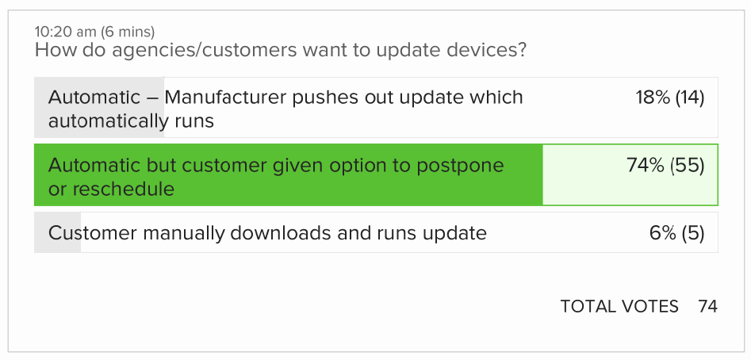
投票の結果画面です。「10:20 am (6 mins)」、設問は「How do agencies/customers want to update devices?」です。選択肢と割合（票数）は、「Automatic – Manufacturer pushes out update which automatically runs」18% (14)、「Automatic but customer given option to postpone or reschedule」74% (55)、「Customer manually downloads and runs update」6% (5)です。最も多い「Automatic but customer given option to postpone or reschedule」が緑色で強調されています。総票数は「TOTAL VOTES 74」です。
A.8 Receiving Information Regarding Device Maintenance Needed
A.8 必要なデバイスの保守に関する情報の受け取り
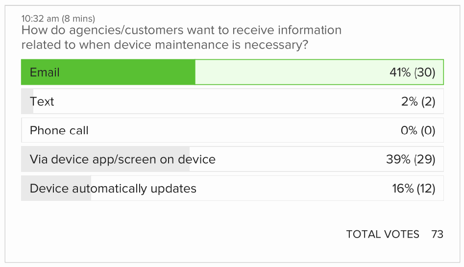
投票の結果画面です。「10:32 am (8 mins)」、設問は「How do agencies/customers want to receive information related to when device maintenance is necessary?」です。選択肢と割合（票数）は、「Email」41% (30)、「Text」2% (2)、「Phone call」0% (0)、「Via device app/screen on device」39% (29)、「Device automatically updates」16% (12)です。最も多い「Email」が緑色で強調されています。総票数は「TOTAL VOTES 73」です。
A.9 Responsibility for Device Security
A.9 デバイスのセキュリティに対する責任
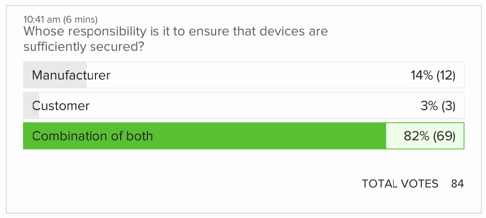
投票の結果画面です。「10:41 am (6 mins)」、設問は「Whose responsibility is it to ensure that devices are sufficiently secured?」です。選択肢と割合（票数）は、「Manufacturer」14% (12)、「Customer」3% (3)、「Combination of both」82% (69)です。最も多い「Combination of both」が緑色で強調されています。総票数は「TOTAL VOTES 84」です。
A.10 Customer View of Marketplace Transparency / Confidence
A.10 市場の透明性・信頼に対する顧客の見方
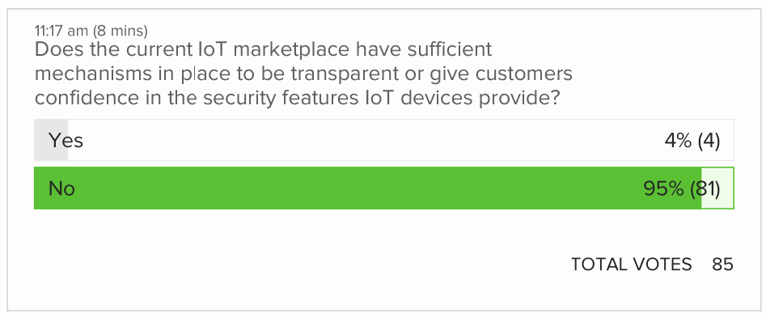
投票の結果画面です。「11:17 am (8 mins)」、設問は「Does the current IoT marketplace have sufficient mechanisms in place to be transparent or give customers confidence in the security features IoT devices provide?」です。選択肢と割合（票数）は、「Yes」4% (4)、「No」95% (81)です。最も多い「No」が緑色で強調されています。総票数は「TOTAL VOTES 85」です。
A.11 Importance of Confidence Mechanisms for Procurements
A.11 調達における信頼確保の仕組みの重要性
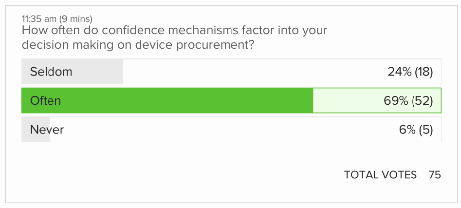
投票の結果画面です。「11:35 am (9 mins)」、設問は「How often do confidence mechanisms factor into your decision making on device procurement?」です。選択肢と割合（票数）は、「Seldom」24% (18)、「Often」69% (52)、「Never」6% (5)です。最も多い「Often」が緑色で強調されています。総票数は「TOTAL VOTES 75」です。
A.12 Most Effective Approach to Manage Risk
A.12 リスクを管理する最も効果的なアプローチ
![Poll result screen. “11:47 am (7 mins)” “Considering that the IoT marketplace is broad and risk is often dependent on the operational use of the IoT device, which is more effective?” Options with percentage (votes): “A flexible mechanism that allows transparency about the cybersecurity features an IoT device may or may not provide” 55% (51); “A mechanism that provides a simplified pass/fail to a small set of core features” 20% (19); “It depends” 23% (22). The highest option, “A flexible mechanism that allows transparency about the cybersecurity features an IoT device may or may not provide”, is highlighted in green. “TOTAL VOTES 92”.](assets/ir-8322/p0028-figure-01.png)
投票の結果画面です。「11:47 am (7 mins)」、設問は「Considering that the IoT marketplace is broad and risk is often dependent on the operational use of the IoT device, which is more effective?」です。選択肢と割合（票数）は、「A flexible mechanism that allows transparency about the cybersecurity features an IoT device may or may not provide」55% (51)、「A mechanism that provides a simplified pass/fail to a small set of core features」20% (19)、「It depends」23% (22)です。最も多い「A flexible mechanism that allows transparency about the cybersecurity features an IoT device may or may not provide」が緑色で強調されています。総票数は「TOTAL VOTES 92」です。
付録 B: 略語
Selected acronyms and abbreviations used in this paper are defined below.
本書で使用されている主な略語と頭字語を以下に定義します。
| 5G | Fifth generation technology standard for broadband cellular networks |
| BRSKI | Bootstrapping Remote Security Key Infrastructure |
| CISA | Cybersecurity and Infrastructure Security Agency |
| CISO | Chief Information Security Officer |
| CTA | Consumer Technology Association |
| DHS | Department of Homeland Security |
| DNI | Director of National Intelligence |
| DoD | Department of Defense |
| ENISA | European Union Agency for Cybersecurity |
| FASC | Federal Acquisition Security Council |
| FedRAMP | Federal Risk and Authorization Management Program |
| FISMA | Federal Information Security Management Act |
| GSA | General Services Administration |
| IC | Intelligence Community |
| IEC | International Electrotechnical Commission |
| IETF | Internet Engineering Task Force |
| IoT | Internet of Things |
| NISTIR | NIST Interagency or Internal Report |
| ISO | International Organization for Standardization |
| IT | Information Technology |
| ITL | Information Technology Laboratory |
| MUD | Manufacturer Usage Description |
| NIST | National Institute of Standards and Technology |
| OMB | Office of Management and Budget |
| OT | Operational Technology |
| RFC | Request For Comments |
| RMF | Risk Management Framework |
| UK | United Kingdom |
| UL | Underwriter’s Laboratories |
| 5G | 広帯域セルラーネットワークの第 5 世代技術標準 |
| BRSKI | Bootstrapping Remote Security Key Infrastructure |
| CISA | サイバーセキュリティ・インフラストラクチャセキュリティ庁（Cybersecurity and Infrastructure Security Agency） |
| CISO | 最高情報セキュリティ責任者（Chief Information Security Officer） |
| CTA | Consumer Technology Association |
| DHS | 国土安全保障省（Department of Homeland Security） |
| DNI | 国家情報長官（Director of National Intelligence） |
| DoD | 国防総省（Department of Defense） |
| ENISA | 欧州連合サイバーセキュリティ機関（European Union Agency for Cybersecurity） |
| FASC | Federal Acquisition Security Council |
| FedRAMP | Federal Risk and Authorization Management Program |
| FISMA | Federal Information Security Management Act |
| GSA | General Services Administration |
| IC | 情報コミュニティ（Intelligence Community） |
| IEC | 国際電気標準会議（International Electrotechnical Commission） |
| IETF | Internet Engineering Task Force |
| IoT | モノのインターネット（Internet of Things） |
| NISTIR | NIST Interagency or Internal Report |
| ISO | 国際標準化機構（International Organization for Standardization） |
| IT | 情報技術（Information Technology） |
| ITL | 情報技術研究所（Information Technology Laboratory） |
| MUD | Manufacturer Usage Description |
| NIST | 米国国立標準技術研究所（National Institute of Standards and Technology） |
| OMB | 行政管理予算局（Office of Management and Budget） |
| OT | 運用技術（Operational Technology） |
| RFC | Request For Comments |
| RMF | リスクマネジメントフレームワーク（Risk Management Framework） |
| UK | 英国（United Kingdom） |
| UL | Underwriter’s Laboratories |